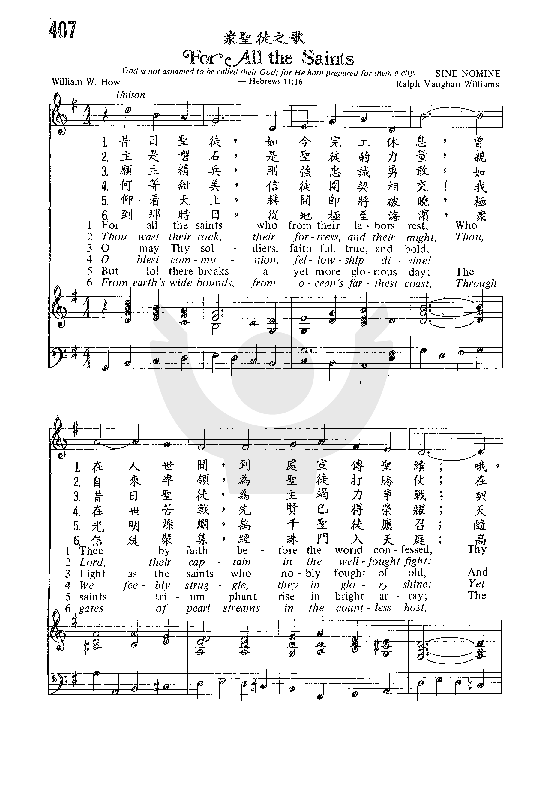
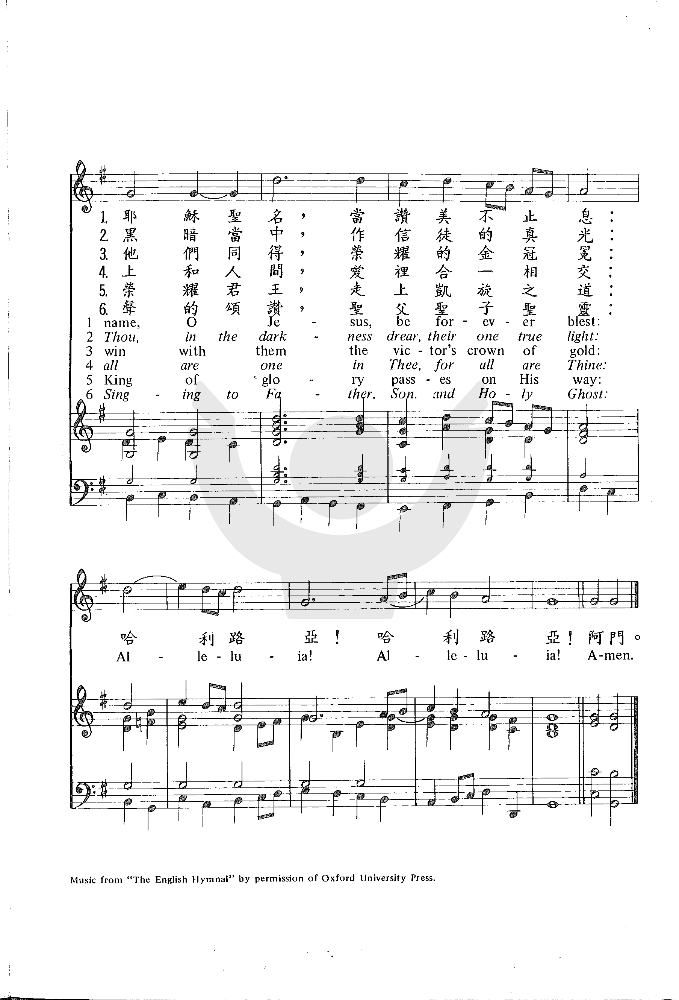

0254 0326 For All the Saints _William
Walsham How 仿效聖徒 ▲ SINE NOMINE
| 簡介
For All the Saints |
| The broad and sweeping tune with which
this hymn is so closely identified was created to be sung during a
reverent but dramatic procession at the beginning of an All Saints’ Day
service, an enacted representation of the enduring “fellowship divine”
celebrated by this text. |
|
|
|
Representative Text
1 For all the saints, who from their labors rest,
who thee by faith before the world confessed,
thy name, O Jesus, be forever bless’d.
Alleluia, alleluia!
2 Thou wast their rock, their refuge, and their might,
thou, Christ, the hope that put their fears to flight;
’mid gloom and doubt, their true and shining light.
Alleluia, alleluia!
3 Oh, bless’d communion, fellowship divine!
We feebly struggle, they in glory shine,
yet all are one in thee, for all are thine.
Alleluia, alleluia!
4 The golden evening brightens in the west.
Soon, soon to faithful servants cometh rest.
Sweet is the calm of paradise the bless’d.
Alleluia, alleluia!
5 But lo! There breaks a yet more glorious day;
the saints triumphant rise in bright array,
as God to glory calls them all away.
Alleluia, alleluia!
6 From earth’s wide bounds, from ocean’s farthest coast,
through gates of pearl streams in the countless host,
*all praising Father, Son, and Holy Ghost.
Alleluia, alleluia!
*Alternate phrase: to praise Creator, Christ, and Holy Ghost
Source: Voices Together #672
|
昔日聖徒已經完工竭息，彼曾在世憑信宣揚信息，
耶穌聖名因彼永受讚美，哈利路亞！哈利路亞！
主是聖徒磐石，堡壘，力量，領導他們奮勇消除魔障，
在黑暗中作眾信徒真光，哈利路亞！哈利路亞！
願主精兵時常忠勇向前，豐功偉績不讓先哲前賢，
同得榮耀勝利黃金冠冕，哈利路亞！哈利路亞！
福哉天上榮耀聖徒團契，我們仍作戰，他們穿榮衣。
天上人間在主內皆一體，哈利路亞！哈利路亞！
千萬聖徒來至地之四境，海洋極岸湧入珠門之城，
高歌頌揚聖父，聖子，聖靈，哈利路亞！哈利路亞！
|
|
https://www.zanmeishi.com/tab/25982.html?songbook=1&index=407
https://www.zanmeishige.com/tab/25982.html?songbook=1&index=407 第407首
-众圣徒之歌



|
| |
|
http://cb.immanuel.net/cb/hymn/Hymn.asp?HymnID=9
|
仿效聖徒
威廉瓦爾森 |
For All the Saints |
威廉瓦爾森 |
William Walsham How |
昔日聖徒以經完工歇息，
彼曾在世憑信宣揚聖績，
耶穌聖名因彼永受讚美，
哈利路亞！哈利路亞！ |
For all the saints Who from their labours
rest,
Who Thee by faith before the world confessed.
Thy name, O Jesus, be forever blest.
Aleluja! Aleluja! |
|
這首詩,是英國聖公會一位主教威廉瓦爾森(Bishop William Walsham
How,1823-1897)所作,他於1823年出生在英國舒茲伯利(Shrewsbury),並且自從牛津大學畢業後,便蒙召擔任聖職,歷任許多堂會牧師以及座堂教師等職,直到1879年(56歲),才擢升為主教,他先前曾任東倫敦Bedford教區副主教,然後再轉任Wakefield教區正主教。然而他的一生為人總是謙和有禮,而且默默耕耘,熱心誠懇,毫不貪圖與計較任何名利;他工作不倦並且能善用時間來充實自己,還對教會佈道事工的推展大為重視,並吸引各階層許多人士來信主。所以,這樣的人才,以致於讓許多大教會都很想聘任他,或是其他教區有更好的主教缺想保留給他,但是他不管工作環境比以前多好,或是待遇條件比以前多優惠,都同樣被他婉辭。他的生活,就像他刻在主教權杖的座右銘(中世紀伯爾拿的名言"Pasce
Verbo, Pasce Vita"),意思就是"以言行來餵養,以生活來餵養"。
威廉瓦爾森還曾與Thomas B. Morrell合作,編輯詩集與聖詩,並從1871年受基督教學術推進會(S.P.C.K)之邀,
擔任編輯普世通用的偉大聖詩之重任, 其所出版的 "教會聖詩集(Church Hymns)",受到很大的肯定,
因為這不像其他聖詩集那樣重視聖事的色彩,所以得到許多福音派教會的大力採用。總算,到了1886年,他終於出版了自己的聖詩集,名為"Poems and
Hymns",其中這首"景仰聖徒",是他於1864年為了紀念所有的聖日所寫的,然而發表後,不但在任何聖日可用,也經常被用於追思禮拜或是逝世週年等;該詩共有八節,可惜聖歌中只有編入四節。
(資料整理:葉俊明) |
羅炳良博士指聖詩是最謙卑的音樂，因為一字一音，四平八穩，容易學習，亦可有各種風格表達，排外性極低。然而，他指出最重要是謙卑的音樂人，如專業的音樂人甘於伴奏，編曲後只用一次，沒有市場價值等等。
「如若唱聖詩感到沈悶，是音樂人的責任。」他續示範聖詩分析和編曲處理，以音樂表達歌詞意境，及不同段落的處理等，示範曲目包括《這是天父世界》、《福音領人出死入生》、《蒙呼召，謙卑敬拜》、《仿效聖徒》等，有關示範可於聯會網頁www.hkcccu.org.hk重溫。
羅博士又分享，有部分外國教會設聖樂牧師一職，由教會授權牧養帶領會眾和音樂人。聖樂牧師會進行把關工作，如檢視聖詩會否有錯誤神學、缺乏基督論、劣質詩詞或音樂，又或編曲採用荷里活或商業心態。他鼓勵音樂人更新舊詩，嘗試不同風格變化，利用音樂幫助講員突顯信息。
聖公會聖三一座堂首任主任牧師、聖公會宗教教育中心始創主任陳衍昌法政牧師回應時指，非常認同羅炳良博士指出聖詩是謙卑的音樂，亦因如此，音樂人和教牧可以共融。他認為藝術不應以教義去規範，音樂自身帶有激勵人心、轉化信仰的能力，值得教會善用。
http://old.yinqi.org/ypaper/2016/99/index.html
卓越性---
雖然音樂的卓越標準很難下定義，但並非不可能。文章有好有壞，音樂也同樣有好有壞。有些音樂家認為「仿效聖徒」這首聖詩不論音樂或詩韻方面都比「有福的確據」來得好，因為「仿效聖徒」結構精密，旋律動聽，和聲豐富，歌詞更具神學深度。但即使我們同意「仿效聖徒」比「有福的確據」更優，「仿效聖徒」是否就比較適合崇拜？如果會眾能把「有福的確據」唱得很熱切，「仿效聖徒」卻唱得悶悶不樂，這兩首聖詩哪一首效果比較好，不就很明顯嗎？
對，也不對。好的音樂能夠提供會眾在崇拜中表達思想與情感，如果超出會眾的接受範圍，就不能稱之為卓越，不論它是否具一流的音樂本質與技巧。但另一方面，會眾能夠盡情享受的詩歌並不都是卓越的音樂，有些唱得盡興的詩歌其實多愁善感，瑣細、淺薄，不值得在崇拜中唱。想真正達到卓越的境地，崇拜音樂必須通過兩方面的挑戰：功能與本質。崇拜音樂應該具通得過固有的音樂衡量標準，也應該能讓會眾敞開心胸表達讚美。
https://zh.wikipedia.org/wiki/%E8%AB%B8%E8%81%96%E7%AF%80
維基百科，自由的百科全書

此條目介紹的是11月1日的基督教節日。關於其他有類似名稱的條目，請見「
萬聖節」。
諸聖節[1]（英語：All
Saints' Day，拉丁語：Sollemnitas
Omnium Sanctorum，希臘語：Άγιοι
Πάντες），又稱諸聖日[2]、萬聖節，是天主教、聖公宗和東正教都有的節日。在天主教會和聖公會中，諸聖節在每年的11月1日。在正教會中，諸聖節是聖靈降臨節（Pentecost）之後的第一個星期日，因而標誌著復活節季度的結束。
諸聖是一個天主教、聖公宗和東正教的稱呼，用於所有忠誠的聖者和殉道者，包括知名的和不知名的。這個節日是天主教和聖公宗的煉靈月的首日，是以聖者的名義慶祝的節日，而這日是用作慶祝所有被列入以及未被列入聖品的聖人的瞻禮。根據教會的說法，聖人（saint）可以指任何在天堂里的忠誠信徒，不限於由教會封聖者（Saint）。[3]
天主教會將節日（Festum omnium sanctorum）定於11月1日，緊接著是11月2日的追思已亡，是第一等級的慶典，包含一個守夜禮和一個八日慶期。
參考文獻[編輯]
https://hymnary.org/text/for_all_the_saints_who_from_their_labors
Scripture References:
st. 1 = Rev. 14:13, Heb. 12:1-2
st. 3 = Rev. 2:10
st. 4 = John 17:22
st. 6 = Prov. 4:18
st. 7 = Rev. 7:9-17
"For All the Saints" is considered to be William W. How's (PHH
279) finest hymn text. Originally in eleven stanzas, it was published in
Earl Nelson's Hymns for Saints' Days (1864) with the heading,
"Saints' Day Hymn. A Cloud of Witnesses. Heb. 12:1." The Psalter Hymnal includes
the original stanzas 1-2, 6-8, and 10-11, with modernized pronouns. (Among the
stanzas omitted in most hymnals are those that begin "for all the apostles,"
"for all the evangelists," and "for all the martyrs.")

The text begins with a proclamation of thanksgiving for the saints ("the cloud
of witnesses") who confessed Christ and found in him protection and inspiration
(st. 1-2). That proclamation is followed by a prayer for Christ's soldiers on
earth to be "faithful, true, and bold" (st. 3). At the crux of the text is the
confession of a "blest communion" of saints in heaven and on earth (st. 4).
Though the holy warfare may be "fierce and long" (st. 5), "all the saints" may
take courage from the vision of a victorious church that worships the triune God
on that "more glorious day" (st. 6-7).
Liturgical Use:
Traditionally for All Saints Day (the first Sunday in November) and similar
church festivals; worship that emphasizes the church as militant and triumphant;
funerals.
--Psalter Hymnal Handbook
==================
After the great “Hall of Faith” passage in Hebrews 11, the writer to the Hebrews
calls the saints who are still on earth to emulate those who have gone before:
“Therefore, since we are surrounded by so great a cloud of witnesses, let us
also lay aside every weight, and sin which clings so closely, and let us run
with endurance the race that is set before us …” (Hebrews 12:1, ESV). What were
the accomplishments of this “great cloud of witnesses?” They “… conquered
kingdoms, enforced justice, obtained promises, … quenched the power of fire,
escaped the edge of the sword, were made strong out of weakness …” (Hebrews
11:33-34, ESV). That sounds rather glamorous! But “Others suffered mocking and
flogging, and even chains and imprisonment. They were stoned, they were sawn in
two, they were killed with the sword” (Hebrews 11:36-37, ESV). What a contrast!
The stanzas of the hymn “For All the Saints” describe the common life of all the
saints: the credit due to Jesus Christ for drawing us all to Him, the strength
and guidance we continue to draw from Him, our joint communion in Christ, the
continuing struggle against evil, and the coming day when the dead shall rise
and we shall all worship together before God the Father, Son and Holy Spirit. No
matter what path each of us travels, we all will enjoy the same glorious eternal
life.
Text:
This text was written by William W. How, a bishop of the Anglican Church, and
first published in Horatio Nelson's Hymns for Saints' Days in 1864. There
is considerable variance between hymnals as to which of the eleven original
stanzas are included (typically six to eight are selected). Two things are
universally agreed upon: that the first two of the original stanzas are always
included (“For all the saints” and “Thou wast their rock”), and the original
fourth and fifth are never sung. Two more things are agreed upon with rare
exception: that the original third stanza is omitted (“For the Apostles”), and
that the last stanza is included (“From earth's wide bounds”). There is
considerable variance on which of the remaining five original stanzas are sung.
There are also differences in wording between different hymnals. Some merely
modernize the language (i.e., “Thou wast their rock” becomes “You were their
rock”). Other changes, as well as the choice of which stanzas to include, appear
to reflect a desire to slightly soften the theme of the Church militant, which
is heavily present in the text.
Tune:
In modern hymnals, this text is paired with SINE NOMINE, written for this text
in 1906 by Ralph Vaughan Williams, the well-known English composer. He wrote
harmonizations for both unison singing and four-part harmony. The title SINE
NOMINE means “without a name” in Latin; it may refer to the many saints whose
names are known only to God (The New Century Hymnal Companion, ed.
Kristin L. Forman, 361).

Before SINE NOMINE was composed, the most popular tune was SARUM, written in
1868 by Joseph Barnby, but this has fallen out of favor and almost never appears
in modern hymnals.
A third tune that this text is sometimes sung with is ENGELBERG, which is more
commonly associated with the text “When in Our Music God Is Glorified.”
ENGELBERG was composed for “For All the Saints” in 1904 by Charles Stanford, who
was one of Ralph Vaughan Williams' teachers. Lloyd Larson has written a dramatic
setting with this tune, titled “Tribute
to the Saints”, which could be used as a choral anthem or as a
congregational hymn.
Notes
Ralph Vaughan Williams (PHH
316) composed SINE NOMINE for this text and published it in the English
Hymnal in 1906. Vaughan Williams wrote two harmonizations¬–one for
unison stanzas and one for choral stanzas. The tune's title means "without
name" and follows the Renaissance tradition of naming certain compositions
"Sine Nomine" if they were not settings for preexisting tunes.
Equipped with a "walking"
bass, SINE NOMINE is a glorious marching tune for this great text. Many
consider this tune to be among the finest of twentieth-century hymn tunes
(it is, perhaps, the cathedral's equivalent to “When the Saints Go Marching
In”). Allowing the "alleluia" phrase to enter before our expectation of it
is a typical and very effective Vaughan Williams touch.
Sing the unison and
harmony stanzas as given in the Psalter Hymnal. Try assigning
the various stanzas to antiphonal groups: a "heavenly" ensemble for stanzas
1-2, an "earthly" ensemble for stanzas 3 and 5, and the entire congregation
on stanzas 4, 6, and 7.
--Psalter Hymnal
Handbook
When/Why/How:
This hymn is traditionally sung for All Saints' Day, for funerals, or for
services on the theme of the Church triumphant. How this hymn is presented may
depend on the occasion. Because the hymn is longer than is typical, try adding
some variety to how it is sung. Since Vaughan Williams originally wrote two
settings, it would be a good idea to sing some stanzas in unison and others in
harmony. Without a choir, the congregation can also be divided into two groups
singing antiphonally as the “heavenly” choir and the “earthly” choir (Emily R.
Brink and Bert Polman, eds., Psalter Hymnal Handbook, 677). The choir
could also be one antiphonal group while the congregation is another.
Tiffany Shomsky,
Hymnary.org
http://www.congsing.org/for_all_the_saints.html
Saints’-Day hymn
William Walsham How, 1864
Addressed to Christ and, indirectly, to one another in st. 4–6
|
For all the saints who from their labors rest, |
Ps. 148:14; Rev. 14:13 |
|
who thee by faith before the world confessed, |
Rom. 10:9; 1 Tim. 6:12b; Heb. 11; 1 John 4:15 |
|
thy name, O Jesus, be forever blest. |
Ps. 72:19 |
|
Alleluia! |
|
|
|
|
|
Thou wast their rock, their fortress, and their might; |
Ps. 18:1-2 Matt. 7:24; 2 Tim. 2:1 |
|
thou, Lord, their Captain in the well-fought fight; |
Josh. 5:14; 1 Tim. 6:12a; 2 Tim. 4:7; Heb. 2:10 KJV |
|
thou, in the darkness drear, their one true light. |
John 1:5; 8:12; 1 John 2:8 |
|
Alleluia! |
|
|
|
|
|
Oh, may thy soldiers faithful, true, and bold, |
Prov. 28:1; 2 Tim. 2:3 |
|
fight as the saints who nobly fought of old, |
Heb. 12:1 |
|
and win with them the victor’s crown of gold. |
2 Tim. 4:8; James 1:12; Rev. 2:10 |
|
Alleluia! |
|
|
|
|
|
The golden evening brightens in the west; |
Matt. 20:8 |
|
soon, soon to faithful warriors comes their rest; |
Rev. 14:13 |
|
sweet is the calm of paradise the blest. |
Luke 16:25 |
|
Alleluia! |
|
|
|
|
|
But lo! there breaks a yet more glorious day; |
Is. 60:19–20 |
|
the saints triumphant rise in bright array; |
1 Cor. 15:43; Rev. 19:8 |
|
the King of glory passes on his way. |
Ps. 24:7–10; Rev. 19:11–16 |
|
Alleluia! |
|
|
|
|
|
From earth’s wide bounds, from ocean’s farthest coast, |
Is. 42:10; Jer. 31:8; Rev. 20:13 |
|
through gates of pearl streams in the countless host, |
Rev. 7:9; 21:21 |
|
singing to Father, Son, and Holy Ghost. |
|
|
Alleluia! |
Rev. 19:1–6 |
When Paul exhorts us to sing, he makes no promise that this will be an easy
affair. Obedience to this command, as all commands, comes in the face of
obstacles not only spiritual (for who is naturally inclined to obey?) but
also, and more importantly here, mechanical. Part of the goal of this web site
is to explain why the mechanism of strophic hymnody, as invented and executed
by the reformers, overcomes some—perhaps never all—of the mechanical hurdles
we face when we try to obey Paul’s commands. Not all hymns overcome these
hurdles with equal success. For some, the poetry is still impassably dense,
even for the most engaged but unliterary of congregants. For others, the tune
is more athletic than the voice even of the most enthusiastic of amateur
singers. In the case of this hymn, both poetic density and melodic athleticism
meet, along with another difficulty—irregularity of syllable-placement, to
make for what must be the most difficult of all the hymns discussed here. We
included it, nevertheless, for three reasons. First of all, very difficult
hymns can be
sung well by congregations, even congregations of weak singers, when they have
come to know those hymns intimately. Second, the text of this hymn enables
congregations to do something that they regularly find necessary: to offer
thanks for the lives of departed saints. No other hymn in the Trinity
Hymnal does this, and this hymn does it with poetic beauty, biblical
density, and theological accuracy. Third, the exertions required by the text
and tune make their description of the perseverance of the saints more vivid.
By contrast, what would it communicate if we sang about the “well-fought
fight” or the “countless host” in a relaxed, comfortable way? Sometimes it’s
right for worship to be tiring.
Avoiding the misdirected praise of older texts written for All-Saints Day,
this hymn’s first stanza blesses not the saints, but Jesus, who is the true
object of our praise when we consider the lives of “those who have fallen
asleep.” The sense of the first stanza is hard to obtain because the extended
prepositional phrase which opens it comes before the sentence’s subject and
verb. The inversion is justifiable, however, for the way it focuses our
attention on the very right, but very surprising, Christ-centeredness of the
stanza. It leads with “for all the saints . . .” but it isn’t them we praise.
In what other hymn do we praise Jesus for the rest obtained and the confession
made by the many Christian souls that have gone before us?
The reason why we should praise Jesus for the safety of these souls is
explored in the second stanza. Christ’s relation to those saints is enumerated
through a list of familiar titles given to him by Scripture. Here we must note
briefly a change in the poem’s rhythm that will become more important when we
examine the tune. The poem is in regular iambics (following the rhythmic
pattern da-DUM da-DUM da-DUM da-DUM da-DUM) except in a handful of
moments, two of which are in this stanza. Both phrases that begin with the
word “thou” are rhythmically ambiguous but suggest an initial trochee for
most English speakers.
/ x
thou, Lord . . .
The iambics of the preceding lines prepare us to hear “thou” without an
accent, but when we arrive on it, we give it one. Poetically, the change is
important because of the emphasis it puts on our address to God.
One reason we sing about the saints who have gone on before us is to celebrate
Christ’s goodness to them. Another is to encourage each other through their
example. The third stanza asks Christ to make us as faithful as those who have
fought and won. Notice here a delightful shift in rhythm. Our iambic metronome
has been ticking away for a whole line and then we start the second line with
the word “fight,” which must, in spite of expectations, be accented to form
another trochee. Here there is no ambiguity and the forceful pounce on the
word “fight” brings new vigor to the word itself.
Part of the encouragement we gain when we consider foregone saints comes from
the hope we have of soon sharing their rest. The fourth stanza pictures this
rest as a sunset that, curiously, “brightens.” The paradox is beautiful and
will carry us into the imagery of the fifth stanza, where a contrast between
sunset and daybreak is a metaphor for the contrast between our intermediate
state (between death and Christ’s return) and our final, resurrected state. We
meet more trochees to start the second and third lines of stanza 4, for an
emphasis first on the imminence of our rest and second on its sweetness.
So, what is a tune to do with these five instances where the poem shifts, with
beautiful effect, from strictly iambic rhythm to initial trochees? When the
question is asked of most hymn tunes, they reply, “nothing at all—I’m a
strophic form and must have the same rhythm for each stanza, however the poet
may muck about with his rhythm.”
This tune, SINE
NOMINE, was written by the composer Ralph Vaughan Williams as part of
his development of the English
Hymnal—among the most celebrated of all hymnals. Vaughan Williams
appreciated the importance of the poem’s original rhythm and consequently sets
it to a tune that is not, strictly speaking, strophic.
Its rhythm does change
from stanza to stanza, to allow the unexpected first syllables of each trochee
to fall on strong beats in the music. Good hymnal editors usually set this
hymn so that each of these irregular moments falls at the left margin of the
page, where the eye begins to read each new line of music. In this snapshot
from the Trinity
Hymnal, notice the empty space to the left in stanzas 2, 3, and 4.

Explaining to a congregation this irregularity, and reminding them simply to
wait a moment at each of those spots where we expect a word but haven’t one,
will go a long way to making this very difficult hymn a very rewarding one.
The accompanist can help, too. Using a thinner texture (with a bass that
doesn’t move on the long syllables) for stanzas 3–4 can bring out the text’s
reflective side and invite softer singing for a spell, leaving congregants
with enough stamina for the sublime closing stanzas. The thinner texture could
be something like:

Playing an instrumental bridge between the end of stanza 5 and the beginning
of stanza 6 can give congregants a chance to catch their breath. (Just
displace the last chord with an instrumental restatement of both alleluias.)
SINE NOMINE
https://www.umcdiscipleship.org/resources/history-of-hymns-for-all-the-saints
William Walsham How
Bishop William Walsham How
By C. Michael Hawn
For All the Saints
by William Walsham How
The United Methodist Hymnal, No. 711
For all the saints who from their labors rest,
Who thee by faith before the world confessed,
Thy name, O Jesus, be forever blest.
Alleluia, Alleluia!
Bishop William Walsham How (1823-1897) was educated at Oxford and served
through the ranks until elected Bishop Suffragan in East London (1879-1888) and
Bishop of Wakefield (1888-1897), the latter being a poor, smoky industrial
parish. Early in his service to Wakefield, he comforted the families of miners
killed in a disaster, although later he failed to resolve a miners’ strike.
While serving in London, he ministered in the slums of the East Side for little
pay and with no social prestige.
How declined prestigious appointments as bishop of Manchester and Durham.
In London, his parishioners called him by various popular titles including “the
children’s bishop,” “the poor man’s bishop,” and “the omnibus bishop,” the
latter designation for his frequent travel among the people of his parish.
Instead of riding in a private coach like many bishops, he took public
transportation, working and living among the poorer people.
Writing his first hymn at age thirteen, How produced many of his hymns
early in his career, while he was a rector at Whittington (1851-1853), a rural
hamlet on the Welsh border. He wrote many of his hymns for people who had little
education. His hymns total around sixty, with more than a third appearing in
British and American hymnals — a large percentage of his total output.
Though his hymn writing came primarily from his earlier years, How was
active in the field of hymnal production throughout most his life. He co-edited
Psalms and Hymns (1854 and 1864) with a Supplement (1867); the SPCK [Society for
Promoting Christian Knowledge] Church Hymns (1871, 1874, 1881); and Children’s
Hymn Book (1881). His own collection, Hymns, was published in 1886. The apex of
How’s recognition as a hymn writer was his commission to compose a hymn text for
the Diamond Jubilee [60th anniversary of the reign] of Queen Victoria (1897).
Originally, “For all thy saints” [italics added] was written for All
Saints’ Day and published in Horatio Nelson’s Hymns for Saints’ Days and Other
Hymns (1864).
The heading was “A Cloud of Witnesses,” a reference to Hebrews 12:1: “Wherefore
seeing we also are compassed about with so great a cloud of witnesses, let us
lay aside every weight, and the sin which doth so easily beset us, and let us
run with patience the race that is set before us . . .” (KJV). After appearing
in Church Hymns (1871) with the revised title “For all the saints,” its usage
spread.
This hymn is a commentary on the article in the Apostles’ Creed, “I
believe in the Communion of Saints.” Within the Anglican tradition, the
relationship with the faithful on earth—The Church Militant—and the saints in
heaven—The Church Triumphant—is paramount. This hymn emphasizes this union.
Originally eleven stanzas, this hymn is usually edited to six or
fewer stanzas in most hymnals. Omitted stanzas include “For the Apostles’
glorious company” [stanza 3], “For the Evangelists” [stanza 5], and “For Martyrs
[stanza 6].” These stanzas enhance our understanding of the heritage of the
saints:
For the Apostles’ glorious company,
Who, bearing forth the cross o’er land and sea,
Shook all the mighty world, we sing to thee,
Alleluia!
For the Evangelists, by whose blest word,
Like fourfold streams, the garden of the Lord
Is fair and fruitful, be thy name adored,
Alleluia!
For Martyrs, who, with rapture-kindled eye,
Saw the bright crown descending from the sky,
And died to grasp it, thee we glorify,
Alleluia!
The omission of these stanzas places the militant metaphors in the
other stanzas in the forefront. In the context of the Anglican theology of the
Church Militant on earth, however, this makes sense:
Original stanza 2: “. . . thou Lord, their Captain in the well-fought
fight . . . “
Original stanza 4: “O may thy soldiers, faithful, true and bold,
Fight as the saints who nobly fought of old . . .”
Original stanza 8: “And when the strife is fierce, the warfare long . .
.”
Original stanza 9: “. . . soon, soon to faithful warriors comes their
rest . . . “
The omitted original stanza 10 alludes to the Church Triumphant:
But lo! there breaks a yet more glorious day;
The saints triumphant rise in bright array;
The King of glory passes on His way.
Alleluia!
Carlton Young notes that for many years this hymn was sung among
Methodists only at memorial services during annual, jurisdictional, and general
conferences. The Anglican and Roman Catholic tradition of observing All Saints’
Day on or near November 1 gave way to celebrations of Reformation Day on October
31.
As Christian funerals have been removed from churches to the more domestic
settings of funeral parlors, this hymn has been used less often, since funeral
parlors are not usually settings where congregational singing takes place with
the support of choirs and pipe organs (Young, 1993, 337-338).
During and following World War II, memorial observances became much more
common in Methodist life, and All Saints’ Day gained a foothold among the key
Sundays of the Christian Year.
The tune that is now most common in the United States, SINE NOMINE, by
the famous English composer, Ralph Vaughan Williams (1872-1958), was not always
a favorite. For at least half of the twentieth century, the Victorian tune SARUM
by Joseph Barnby (1838-1896) was the preferred tune by many, and still is by
some. ENGLEBURG by Charles Villiers Stanford (1952-1924) initially was used
often, but Vaughan Williams’ stirring melody won the day after its publication
in The English Hymnal (1906), for which the composer served as music editor.
SINE NOMINE (literally “without a name” in Latin) appeared as one of four
anonymous tunes in The English Hymnal. Carl Daw, Jr. notes that the Latin tune
name was equivalent to the undesignated “anonymous” musical setting later
attributed to Vaughan Williams. He further suggests that Vaughan Williams “may
have wished to avoid overt competition with ENGLEBURG, the tune written for this
text by his former teacher C. V. Stanford and published only two years earlier
in the 1904 edition of Hymns Ancient and Modern” (Daw, 2016, 330).
The final stanza fully consummates the Church Triumphant:
From earth’s wide bounds, from ocean’s farthest coast,
Through gates of pearl streams in the countless host,
singing to Father, Son, and Holy Ghost:
Alleluia!
FOR FURTHER READING:
Daw, Carl P., Jr., Glory to God: A Companion. Louisville: Westminster
John Knox, 2016.
Young, Carlton R. Companion to The United Methodist Hymnal. Nashville:
Abingdon Press, 1993.
hymnologyarchive
https://www.hymnologyarchive.com/for-all-the-saints
with
ENGELBERG
SINE NOMINE
FOR ALL THE SAINTS
I. Text: Origins
This hymn for liturgical saints days was written by William Walsham How
(1823–1897) and first published in Hymn for Saints’ Days, and Other Hymns
(London: Bell & Daldy, 1864 | Fig. 1), compiled by Horatio Nelson (1823–1913,
3rd Earl Nelson of Trafalgar House, Wiltshire). At the time, William How was
rector of Whittington, Shropshire. The original text contained eleven stanzas of
three lines, beginning “For all Thy saints,” with an Alleluia refrain. It was
headed by Hebrews 12:1, “Therefore, since we are surrounded by so great a cloud
of witnesses, let us also lay aside every weight, and sin which clings so
closely, and let us run with endurance the race that is set before us” (ESV).
The 1864 publication did not include music.
72-677_o-1_Nelson1864-2a.jpg
72-677_o-1_Nelson1864-2b.jpg
72-677_o-1_Nelson1864-3a.jpg
72-677_o-1_Nelson1864-3b.jpg
Fig. 1. Hymn for Saints’ Days, and Other Hymns (London: Bell & Daldy,
1864).
William How published a revised version of his hymn in A Supplement to
Psalms & Hymns (London: John Morgan, 1867 | Fig. 2), co-edited by him and T.B.
Morrell. Here he introduced the revision to his first line (“For all the
saints”) and a change to 6:1 (“faithful, true”).
Supplement_to_Psalms_Hymns-16.jpg
Supplement_to_Psalms_Hymns-17.jpg
Supplement_to_Psalms_Hymns-18.jpg
Fig. 2. A Supplement to Psalms & Hymns (London: John Morgan, 1867).
How published additional revisions of his hymn in Church Hymns (London:
S.P.C.K., 1871 | Fig. 3), for which he served as co-editor. Changes included a
small change from “Jesus” to “Jesu” at 1:3, from “Light of Light” to “one true
light” at 2:3, from “blest” to “pure” at 4:1, from “died to” to “dying” at 5:3,
and from “comes the” to “cometh” at 9:2. Notice also the Scripture heading of
John 17:10 (misprinted as xvi), where Jesus prayed, “All mine are yours, and
yours are mine, and I am glorified in them” (ESV). John Julian regarded this
1871 edition as the “Authorized text” (Dictionary, p. 380).
View fullsize
ChurchHymns-1871-183.jpg
View fullsize
Fig. 3. Church Hymns (London: S.P.C.K., 1871).
Fig. 3. Church Hymns (London: S.P.C.K., 1871).
More revisions were introduced in the New and Revised Edition of Hymns
Ancient & Modern (1904 | Fig. 4 below), from “drear” to “still” at 2:3, and a
new line at 7:2 (HA&M 4:2), “We fight, as they did, ’neath the holy sign.” It
also repeated the minor change from “cometh” to “comes their” at 9:2 introduced
in the 1875 edition. According to the Historical Edition (1909), p. 317, “The
alterations . . . were made by the special request of the Bishop,” but according
to John Julian (1907), p. 1637, “The alterations . . . as given in the 1904 ed.
of Hys. A. & M. were reluctantly sanctioned by Bp. How shortly before his death
in 1897.”
II. Text: Analysis
This hymn was intended for liturgical saints days and was inspired in
part by the concept of the great cloud of witnesses in Hebrews 12:1. J.R. Watson
sees in this hymn a strong connection to both the ancient hymn Te Deum and to
Revelation:
The Apostles, the Evangelists, and the Martyrs . . . appear in the Te
Deum (where How’s “Evangelists” are “the goodly fellowship of the prophets”),
and the whole hymn is indebted to the sustained praise of that sublime poem. But
its imagery suggests the final battle against evil: the unfolding of events
suggests a long-drawn out and exhausting battle, in which the forces of good
will at last be triumphant. The inspiration is Revelation 19 and 20. The hymn’s
length is there for a purpose: it allows the mind to dwell on the arduous
struggle and its final end in glory.[1]
Frank Colquhoun noted the proper object of the hymn’s message: Christ.
The hymn begins on the note of thanksgiving, [which is] expressed in the
third line: “Thy name, O Jesu, be forever blest.” It is important to note that
the hymn, in so far as it comprises elements of praise and prayer, is addressed
to Jesus. So it is him we bless “for all the saints”—or as Bishop How originally
wrote, “all thy saints.” The saints are his. This is the thing that
distinguishes them from the rest and best of mankind and unites them in one
glorious company. They are Christ’s, and now they are at rest with him, for the
blessed dead “who die in the Lord … rest from their labours” (Rev. 14:13).[2]
Colquhoun also noted connections to Mark 8:38 and Romans 1:16 (“who by
faith before the world confessed”), Psalm 18:2 (“their rock, their fortress, and
their might”), 1 Timothy 6:12 (“fight as the saints who nobly fought of old”), 2
Timothy 4:8 and Revelation 2:10 (“the victor’s crown of gold”), and Luke 23:43
(“the calm of Paradise”).
Hymnologist Erik Routley felt the hymn’s strength was in its elemental
description of sainthood:
“For all the saints,” not by a long way the most profound of hymns on the
saints of the Church, has this great advantage over most of its fellows, that at
its very beginning it draws attention to the quality essential to
sainthood—faith. “Who thee by faith before the world confessed”—that is the most
important line in the hymn; the rest is background and scenery. The truth about
saints is told in the eleventh chapter of Hebrews, where we have that famous
catalogue of heroes of Old Testament history. If anybody wants to know just what
a saint is, and just how a saint can be expected to help him, it is all
there.[3]
III. Tunes
In the music edition of Church Hymns (1874) edited by Arthur Sullivan,
How’s text was set to a pointed Anglican chant by William Hayes (1708–1777).
Similarly, in the Revised and Enlarged Edition of Hymns Ancient & Modern (1875),
it was set to a chant by Arthur Troyte (1811–1857), called TROYTE’S CHANT NO. 2.
1. ENGELBERG
In the New and Revised Edition of Hymns Ancient & Modern (1904 | Fig. 3),
Charles Villiers Stanford (1852–1924) provided a new tune for How’s text,
ENGELBERG. Stanford produced an ambitious, multi-stanza arrangement with options
for both unison and harmonized singing, and varied accompaniment, using eight of
How’s eleven stanzas. At the time, Stanford was highly regarded as a composer,
music professor, and music director, with a special interest in Irish music.
When ENGELBERG was published in 1904, Stanford was also in the process of
editing the Complete Collection of Irish Music as Noted by George Petrie
(1902–1905).

ForAlltheSaints-HAM1904_001a.jpg
ForAlltheSaints-HAM1904_002a.jpg
ForAlltheSaints-HAM1904_002b.jpg
ForAlltheSaints-HAM1904_003a.jpg
Fig. 4. Hymns Ancient & Modern, New Edition (London: William Clowes and
Sons, 1904).
According to Carl Daw, “The tune name commemorates the site of a famous
Benedictine abbey in Switzerland. Stanford might have visited it in 1873 when he
returned to Cambridge from Bonn by way of Switzerland and Paris.”[4] In many
hymns, the final “Amen” is optional, but in this one, because each stanza ends
on a half cadence, it is “necessary to preserve the musical integrity of the
setting, in which the music of the Amen serves as the final cadence of the
tune.”[5]
Jeremy Dibble, a scholar of major English composers in the 19th century,
offered this assessment, especially in comparison to another tune to be
published shortly thereafter:
In many ways Stanford’s tune seems to foreshadow SINE NOMINE (which
appeared in the EH for the first time two years later) with its three-note
anacrusis at the opening, its variegation of stanzas in unison and harmony, and
its muscular diatonicism .Yet there are also more elaborate features of
ENGELBERG, notably the importance of the organ part, the strophic variation of
the eight stanzas which are harmonised differently throughout, and the division
of some unison verses for high and low voices. The tune also has a number of
innovative attributes. One is its succession of three-bar phrases (SINE NOMINE,
by comparison, is entirely regular), each of which begins with the triple
anacrusis; another is the conclusion of each stanza (with the exception of the
last) on the dominant, an open-ended factor which requires the succeeding stanza
to ‘resolve’ the cadence. This feature, above all, gives the hymn a sense of
seamless continuity which concludes only with the final cadence.[6]
In modern hymnals, ENGELBERG is better known through other texts, such as
“All praise to thee, for thou, O King divine” by F. Bland Tucker (1895–1984) or
“When in our music God is glorified” by Fred Pratt Green (1903–2000).
2. SINE NOMINE
Just two years after ENGELBERG, English composer Ralph Vaughan Williams
(1872–1958) included his own tune SINE NOMINE in The English Hymnal (Oxford:
University Press, 1906 | Fig. 5). This tune has become more closely associated
with How’s text, owing in part to the general failure of the 1904 edition of
Hymns Ancient & Modern, which was replaced in 1906 by a restoration of the
previous edition. The name of this tune, meaning “without a name,” is probably
in homage to the numerous believers (saints) who have died and are not
specifically commemorated by name in services of the church. The hymnal editors
used eight stanzas of How’s 1871 text, omitting the stanzas for apostles,
evangelists, and martyrs.

ForAlltheSaints-EnglishHymnal1906_001a.jpg
ForAlltheSaints-EnglishHymnal1906_001b.jpg

ForAlltheSaints-EnglishHymnal1906_002a.jpg
Fig. 5. The English Hymnal (Oxford: University Press, 1906).
This original setting, with options for unison and choral singing,
attempted to control the placement of some word stresses, as seen in the opening
measure, the fifth, and the ninth. This variable rhythm proved troublesome.
Methodist scholar James T. Lightwood, writing in 1935, explained the problem:
Many such variations occur throughout the hymn, and although a little
careful study on the part of choristers and congregations might overcome any
difficulties, yet these same variations in time values are found to be a
continual source of annoyance and misfits. In recent hymnals the composer has
arranged the tune to begin throughout on the second beat of the bar.[7]
As church music scholar Paul Westermeyer put it:
The tune is so strong that it hides its flaw, the differing placement of
syllables from stanza to stanza. Assemblies sing it with gusto even when they
get the words in the wrong places. Typical of Vaughan Williams, it has broad
sweep, flow, and contrast.[8]
Vaughan Williams’ revised version of the tune appeared in Songs of Praise
(1925) and the revised edition of The English Hymnal (1933).
3. FOR ALL THE SAINTS
Another tune commonly associated with this text is FOR ALL THE SAINTS (or
PRO OMNIBUS SANCTIS) by Joseph Barnby (1838–1896), first published in the Sarum
Hymnal (Salisbury: W.P. Aylward, 1869 | Fig. 6). In the tune index, this was
given the rather uninteresting designation of “No. 299, Sarum Hymnal” rather
than a proper tune name. It is sometimes also called SARUM or ST. PHILIP.

View fullsize
Barnby 1869 AYLW-3a.jpg
View fullsize
Fig. 6. Sarum Hymnal (Salisbury: W.P. Aylward, 1869).
Fig. 6. Sarum Hymnal (Salisbury: W.P. Aylward, 1869).
Barnby’s tune had enjoyed wide usage prior to the publication of SINE
NOMINE in 1906. Early in the 20th century, James T. Lightwood felt Barnby’s tune
had served its time but was worth replacing:
For a long time certain musicians had felt that Barnby’s popular tune
known as ST. PHILIP was scarcely worthy of the words, and now SINE NOMINE is
gradually displacing it. Many of us cling to old associations, perhaps a little
too long sometimes, and with many people even yet the older tune remains the
more popular. It is said that a certain bishop, on hearing Vaughan Williams’
tune for the first time, exclaimed, “Good gracious, they will change the tune of
‘God save the king’ next!”[9]
by CHRIS FENNER
for Hymnology Archive
7 October 2019
rev. 20 September 2020
Footnotes:
J.R. Watson, “For all the saints, who from their labours rest,” An
Annotated Anthology of Hymns (Oxford: University Press, 2002), p. 345.
Frank Colquhoun, “For all the saints, who from their labours rest,” Hymns
that Live (Downers Grove, IL: Intervarsity, 1980), p. 156.
Erik Routley, “For all the saints, who from their labours rest,” Hymns
and the Faith (London: John Murray, 1955), p. 302.
Carl P. Daw Jr., “ENGELBERG,” Glory to God: A Companion (Louisville:
Westminster John Knox, 2016), pp. 609–610.
Raymond Glover & Alec Wyton, “ENGELBERG,” The Hymnal 1982 Companion, vol.
3A (NY: Church Hymnal Corp., 1994), p. 570.
Jeremy Dibble, “Charles Villiers Stanford,” Canterbury Dictionary of
Hymnology:
http://www.hymnology.co.uk/c/charles-villiers-stanford
James T. Lightwood, “For all the saints,” The Music of the Methodist
Hymn-Book (London: Epworth Press, 1935), p. 444.
Paul Westermeyer, “For all the saints,” Hymnal Companion to Evangelical
Lutheran Worship (Minneapolis: Augsburg Fortress, 2010), p. 242.
James T. Lightwood, “For all the saints,” The Music of the Methodist
Hymn-Book (London: Epworth Press, 1935),pp. 443–444.
Related Resources:
John Julian, “For all Thy saints who from their labours rest,” A
Dictionary of Hymnology (London: J. Murray, 1907), pp. 380, 1637.
James T. Lightwood, “For all the saints,” The Music of the Methodist
Hymn-Book (London: Epworth Press, 1935),pp. 443–444.
Erik Routley, “For all the saints, who from their labours rest,” Hymns
and the Faith (London: John Murray, 1955), pp. 301–306.
“For all the saints, who from their labors rest,” The Hymnal 1940
Companion, 3rd rev. ed. (NY: Church Pension Fund, 1962), p. 89.
Frank Colquhoun, “For all the saints, who from their labours rest,” Hymns
that Live (Downers Grove, IL: Intervarsity, 1980), pp. 154–160.
Raymond Glover & Alec Wyton, “ENGELBERG,” The Hymnal 1982 Companion, vol.
3A (NY: Church Hymnal Corp., 1994), p. 570.
J.R. Watson, “For all the saints, who from their labours rest,” An
Annotated Anthology of Hymns (Oxford: University Press, 2002), pp. 344–345.
Edward Darling & Donald Davison, “For all the saints, who from their
labours rest,” Companion to Church Hymnal (Dublin: St. Columba, 2005), pp.
617–618.
Paul Westermeyer, “For all the saints,” Hymnal Companion to Evangelical
Lutheran Worship (Minneapolis: Augsburg Fortress, 2010), pp. 241–242.
Carl P. Daw Jr., “ENGELBERG,” Glory to God: A Companion (Louisville:
Westminster John Knox, 2016), pp. 609–610.
J.R. Watson, “For all the saints, who from their labours rest,”
Canterbury Dictionary of Hymnology:
http://www.hymnology.co.uk/f/for-all-the-saints-who-from-their-labours-rest
“For all the saints, who from their labor rest,” Hymnary.org:
https://hymnary.org/text/for_all_the_saints_who_from_their_labors
https://en.wikipedia.org/wiki/For_All_the_Saints
From Wikipedia, the free encyclopedia
Jump to navigationJump
to search
"For All the Saints" was written as
a processional
hymn by the Anglican Bishop
of Wakefield, William
Walsham How. The hymn was first printed in Hymns for Saints' Days,
and Other Hymns, by Earl Nelson, 1864.
The hymn was sung to the melody Sarum,
by the Victorian composer Joseph
Barnby, until the publication of the English
Hymnal in 1906. This hymnal used
a new setting by Ralph
Vaughan Williams which he called Sine Nomine (literally,
"without name") in reference to its use on the Feast
of All Saints, 1 November (or the first Sunday in November, All Saints
Sunday in the Lutheran Church). It has been described as "one of the
finest hymn
tunes of the [20th] century."[1]
Although most English hymn tunes of its era
are written for singing in SATB four-part
harmony, Sine Nomine is primarily unison (verses 1,2,3,7 and 8)
with organ accompaniment; three verses (4, 5 and 6) are set in sung
harmony. The tune appears in this forms in most English hymnbooks (for
example English
Hymnal (641), New
English Hymnal (197), Common
Praise (232)) and American hymnals (for example, The
Hymnal 1982 and the Lutheran
Service Book (677)).
Since the 1990s, some Presbyterian churches
and groups affiliated with Reformed
University Fellowship in the United States use a tune composed by
Christopher Miner.[2]
Charles Villiers Stanford's tune Engelberg was also written to
be partnered with this hymn, although in the wake of Sine nomine it
never gained popularity and is now more commonly used with other hymns,
including "When in Our Music God is Glorified."[3]

"For All Thy Saints"
(Sarum Hymnal, 1868)
-
1. For all the saints, who from their labours rest,
-
Who Thee by faith before the world confessed,
-
Thy Name, O Jesus, be forever blessed.
-
Alleluia, Alleluia!
-
2. Thou wast their Rock, their Fortress and their Might;
-
Thou, Lord, their Captain in the well fought fight;
-
Thou, in the darkness drear, their one true Light.
-
Alleluia, Alleluia!
-
3. For the Apostles’ glorious company,
-
Who bearing forth the Cross o’er land and sea,
-
Shook all the mighty world, we sing to Thee:
-
Alleluia, Alleluia!
-
4. O may Thy soldiers, faithful, true and bold,
-
Fight as the saints who nobly fought of old,
-
And win with them the victor’s crown of gold.
-
Alleluia, Alleluia!
-
5. For the Evangelists, by whose blest word,
-
Like fourfold streams, the garden of the Lord,
-
Is fair and fruitful, be Thy Name adored.
-
Alleluia, Alleluia!
-
6. For Martyrs, who with rapture kindled eye,
-
Saw the bright crown descending from the sky,
-
And seeing, grasped it, Thee we glorify.
-
Alleluia, Alleluia!
-
7. O blest communion, fellowship divine!
-
We feebly struggle, they in glory shine;
-
Yet all are one in Thee, for all are Thine.
-
Alleluia, Alleluia!
-
8. And when the strife is fierce, the warfare long,
-
Steals on the ear the distant triumph song,
-
And hearts are brave, again, and arms are strong.
-
Alleluia, Alleluia!
-
9. The golden evening brightens in the west;
-
Soon, soon to faithful warriors comes their rest;
-
Sweet is the calm of paradise the blessed.
-
Alleluia, Alleluia!
-
10. But lo! there breaks a yet more glorious day;
-
The saints triumphant rise in bright array;
-
The King of glory passes on His way.
-
Alleluia, Alleluia!
-
11. From earth’s wide bounds, from ocean’s farthest coast,
-
Through gates of pearl streams in the countless host,
-
Singing to Father, Son and Holy Ghost:
-
Alleluia, Alleluia!
Some versions substitute "far off we
hear" for "steals on the ear" (verse 8). There are other minor variations
as well. Most renditions omit verses 3, 5 and 6.
Use in German[edit]
On a request by German composer Heinz
Werner Zimmermann, Anna Martina Gottschick wrote a hymn "Herr,
mach uns stark" (Lord make us strong [in courage to confess you]) to
the "In nomine" tune in 1972, because the composer wanted to make it
available for German church singing. Her hymn is intended for the end of
the liturgical year. The version in German Protestant and Catholic hymnals
closes with a stanza which Jürgen
Henkys translated from "For All the Saints".[4]
References[edit]
-
"For All the Saints", Cyber
Hymnal, Hymn Time.
- Richard Clothier, A Heritage of
Hymns (Independence, Missouri: Herald Publishing House, 1996),
156–58.
External links[edit]
http://old.yinqi.org/ypaper/2016/99/index.html

許多受過專業訓練的教會音樂家，意識到教會這麼龐大的音樂曲目資料庫是如此偉大、富神學深度的音樂寶藏，他們對瑣碎乏味的現代敬拜音樂感與講道缺乏內容、強調自我幫助的陳腔濫調感到悲痛。另一方面，支持敬拜讚美的人認為他們使用強力的音樂獲得壓倒性的勝利，時代變了，音樂風格就跟著變。建造高牆來保護傳統教會音樂是短視的作法、菁英主義，會眾出席率已經下降，未來注定降到谷底。我們應該到哪裡尋求幫助？
令人驚奇的是，在困難的音樂議題上，有些教會已經找到「第三條路」。
具活力與忠實的會眾強調會眾音樂在風格與類型體裁上既卓越且折衷。想明白會眾對音樂的態度，了解以下三種特性：會眾性、卓越性、折衷性，至關重要。
會眾性---有活力的聚會意識到必須把音樂貫穿在崇拜中，使崇拜流暢，有整體性。這些聚會使用大量的音樂，聖詩與短歌使會眾凝聚在一起，強化會眾讀聖經與聽講道的領受，產生奧祕，讓會眾有參與感，表達感恩與喜樂，聚集會眾的奉獻，然後差遣會眾進入世界被上帝所用。大多數有活力的聚會有唱詩班與專業的音樂家，然而重點在會眾的音樂，不是高技巧音樂家的獻樂。會眾若只當觀眾，聆聽詩班表演或管風琴殿樂然後拍手，無論從什麼角度都不合理。有些聚會並不特別倚賴專業音樂家，而把豐富的音樂恩賜貢獻在教會各部分。收奉獻的時候，有些會眾唱詩或演奏銅管、絃樂、吉他或可以發揮恩賜的樂器。詩班提昇禮拜的進行，為思考與情緒提供聲音，分享給全體會眾。會眾不單單聽音樂；他們與音樂一起崇拜。
卓越性---雖然音樂的卓越標準很難下定義，但並非不可能。文章有好有壞，音樂也同樣有好有壞。有些音樂家認為「仿效聖徒」這首聖詩不論音樂或詩韻方面都比「有福的確據」來得好，因為「仿效聖徒」結構精密，旋律動聽，和聲豐富，歌詞更具神學深度。但即使我們同意「仿效聖徒」比「有福的確據」更優，「仿效聖徒」是否就比較適合崇拜？如果會眾能把「有福的確據」唱得很熱切，「仿效聖徒」卻唱得悶悶不樂，這兩首聖詩哪一首效果比較好，不就很明顯嗎？
對，也不對。好的音樂能夠提供會眾在崇拜中表達思想與情感，如果超出會眾的接受範圍，就不能稱之為卓越，不論它是否具一流的音樂本質與技巧。但另一方面，會眾能夠盡情享受的詩歌並不都是卓越的音樂，有些唱得盡興的詩歌其實多愁善感，瑣細、淺薄，不值得在崇拜中唱。想真正達到卓越的境地，崇拜音樂必須通過兩方面的挑戰：功能與本質。崇拜音樂應該具通得過固有的音樂衡量標準，也應該能讓會眾敞開心胸表達讚美。
在「會眾愛唱」與「優質音樂」找到平衡點並不容易。聖詩作者Eric Routley
提出：「應該從會眾熟悉且喜愛的歌開始唱，但教會音樂家必須不斷提昇會眾，唱音樂上較能成熟表達的曲子。」卓越的音樂能夠讓我們真誠地參與崇拜，又能鼓勵我們成長成熟、信仰上深思熟慮。最好的詩歌能讓會眾唱出熱情，並在唱完時改變會眾。音樂的功能與品質在有活力的聚會上都看得到，詩歌的音樂品質與會眾的反應同樣卓越。聚會中沒有一直反覆的敬拜詩歌，也沒有陳腔濫調的聖詩。
折衷性---有活力的聚會最大的音樂特徵是使音樂風格與類型多樣化，兼容並蓄。通常會在一堂崇拜體驗多樣化，例如早期的美國聖詩後接著唱泰澤（Taize）的合唱曲；宗教改革時期的聖詩後接著黑人靈歌---重點在每星期的崇拜中擴大範圍。若連續幾週參加這樣的聚會，就能體驗音樂的多樣性---從古典到民俗音樂，從巴哈到搖滾。如果把教會音樂的曲目當做光譜，從傳統、現代到前衛音樂，大多數會眾會在光譜頻寬圖上用垂直線標出他們喜愛的音樂：「我們喜歡這種音樂，不喜歡那種。」然而有活力的會眾畫的不是垂直線，而是地平線，線條以上是卓越的音樂，以下則是較差的音樂。有活力的會眾會在寬廣的音樂風格中尋找卓越的音樂。
並不是這麼做了就都沒問題。不是每個人都喜歡各種類型的音樂，需要彼此包容、共同參與。會眾不需要喜歡每一種音樂，但必須願意為了群體的合一而唱。有位弟兄選了一首老歌獻詩，他唱得很感傷，又過度戲劇化。從音樂的角度來看這不算好歌，但會眾聆聽時充滿了愛，並且真誠欣賞。雖然音樂價值不高，卻是「寡婦的兩個小錢」，唱的人滿懷感恩，聽的人歡喜領受。（取自Beyond
the Worship Wars -- Building Vital and Faithful Worship By Thomas G. Long）
http://old.yinqi.org/ypaper/2003/paper0309.htm
【編者的話】6/23音契心靈樂篇將演出貝多芬莊嚴彌撒中的《垂憐經》與《羔羊經》，特邀在古典音樂領
域極有專研的蘇友瑞先生為此撰文，經過他的剖析，您會在莊嚴彌撒中細膩卻難懂的樂音呈現，看到貝多
芬個人深刻的心靈內省。另外西貝流士Ｄ小調小提琴協奏曲，為經典之作。在愛樂電台楊怡珊小姐的導聆
，會發現西貝流士的生長環境、時代，對他產生的影響，在音樂中如何表達他的情感。經過專人解說，您
會發現音樂離我們並不遠，真是人類心靈情感的共同語言。也期盼您能至國家音樂廳欣賞音契年度籌劃， 精心呈現的「莊嚴的共鳴」音樂會。

|
根據法朗克的傳記作者的敘述，這首動人的樂曲，原本是作曲家法朗克在巴黎的一所教堂擔任管風琴師的時候，於1861年的聖誕彌撒中在管風琴上即興演奏出來的，但是一直到1872年才正式印刷問世。作曲家法朗克曾經在1860譜寫了一首彌撒曲（Messe
a trios voix），原來是一首合唱與管弦樂團的彌撒曲，但是到1872年，他出版了一個精簡版的同一個彌撒曲，將原本的樂團編制簡化為管風琴、豎琴、大提琴、低音大提琴，並且在其中插入這首天使之糧，將它當作領聖體（Communion）的時候使用的樂章。
至於歌詞部份，為聖多馬亞奎拿的基督聖體（Corpus Christi Hymn）聖詩Sacris solemnis的第六節歌詞，之後在十九世紀的時候被單獨取出來，在教會儀式中下午的唸讀玫瑰經（Rosary）以及迎主曲（Benediction）中使用。
拉丁文歌詞的原文以及中文大意為：
Panis angelicus 天使的靈糧，
fit panis hominum; 降卑成為人的糧；
Dat panis caelicus 這個天上的糧，
figuris terminum: 終止了所有的預言：
O res mirabilis! 啊，多奇妙！
manducat Domi num 上主榮耀所充滿的，
Pauper, pauper, servus, et humilis.
卻是如此貧窮、謙卑的僕人。
今日，這首作品已成為一首感動人心的著名聖樂名作，並且以許多不同的形式來演出，而在歌詞上面，大多以拉丁文原文的方式演唱，但是由於在翻譯上很難忠實於原文語句上與音樂的配合性，當以其他語言演唱的時候，通常會以其他的歌詞來取代原歌詞。 |
|
|
 |
|
莫札特所寫的獨唱經文歌，這首經文歌寫於1773年，莫札特於1769年12月到1773年3月之間三次訪問義大利，除了接觸了傑出的義大利音樂以及音樂家，更重要的，在那裡發表作品，1772年12月在米蘭演出了歌劇Lucca
Silla，他非常欣賞當中擔任要角的女高音Venanzio Rauzzini，於是為她寫了這首著名的經文歌。這是一首三個樂章的經文歌，女高音獨唱，管絃樂團以及管風琴伴奏，第一樂章為快板，第二樂章為宣敘調，第三樂章為慢板開始，最後以快板的「哈利路亞」做結束，由於這個哈利路亞樂段十分的愉悅亮麗，整個段落只使用Alleluja這個字，卻不停止的以各式花腔的方式表現貫穿全曲，深得人們的喜愛，許多人甚至將這個段落當作一個獨立樂章拿出來演奏。
哈利路亞（Alleluja）在聖經詩篇裡有一句常常看到的話，中文聖經寫的是「你們要讚美耶和華！」但是在希伯來文中就是一個字「哈利路亞Hallelujah」，其中Halle指的是你們來，lu是讚美，jah是上帝（耶威或是耶和華），這個字到了希臘文就成了Alleluja，哈利路亞是基督徒讚美上帝時最常使用的表現字句。 |
|
|
|
|
每個音樂家最知名的作品，往往是最常被附會成各種與音樂不相干事物的樂曲，因而造成音樂家真正偉大的樂曲，因為沒有『標題』或不能加上鮮明意象而為一般人忽略。這現象在貝多芬身上尤為明顯：如《月光》、《命運》這些樂曲的知名， 可說有一半是鮮明的標題意象造成；即使在同一首作品中，第九交響曲的《合唱》樂章，有極鮮明的象徵讓人聯想到和平與快樂，令多數愛樂者稱頌不己，卻有多少人能體會第三樂章慢板中，更勝一籌的樂思與作曲技巧？ 可說有一半是鮮明的標題意象造成；即使在同一首作品中，第九交響曲的《合唱》樂章，有極鮮明的象徵讓人聯想到和平與快樂，令多數愛樂者稱頌不己，卻有多少人能體會第三樂章慢板中，更勝一籌的樂思與作曲技巧？
同樣的道理，如果《莊嚴彌撒》這一名稱造成宗教聯想，而影響我 們對其音樂本質的欣賞，也是一大損失。不可否認的，貝多芬在這
首音樂儘情表達他對宗教心靈的提問與呼喚；但若只是單純的信仰 宣告，那就毫無音樂欣賞價值了。貝多芬的偉大，在於把他的心靈
提問與音樂型式進行最完美的綜合；造成即使你完全對心靈提問毫 無興趣，只要你專注欣賞這首音樂的純粹美感，就很容易被引導進貝多芬一生的心靈提問，與他
共同分享心靈追尋的神秘體驗；這正是偉大的音樂藝術帶給人類最崇高的『心靈躍升』體驗。
這首樂曲複雜的程度，可以說每個樂器聲部、包括四個獨唱歌手和四個合唱聲部這八種『樂器』
，全都有擔任主角的機會；尤其是合唱團和獨唱者的兩種男女四聲部，完全都是獨立的。這樣的
樂曲強烈考驗著愛樂者對多聲部的平行欣賞能力，於是我們必需先對於所謂的『賦格曲』（或賦 格曲式）有一定的理解，才能跨越這首音樂的欣賞藩籬。
『賦格曲』常常是音樂家進行的心靈提問的作曲技巧；它不過是利用一句短短的旋律，再加以不
斷的發展延續，把該短短不到幾秒鐘的旋律發展成數分鐘甚至半小時以上的大樂曲。在該旋律不
斷發展的同時，另一條旋律會同時出現、彷彿來幫它伴奏。『另一條旋律』常常就是原來的旋律
，只是比原來旋律慢一些出現。這樣子同時出現的兩個聲部能融洽相處嗎？我們知道讓它們聽起
來很融洽的作曲方法稱為『對位法』，不過這是讓作曲家去傷腦筋的事，單純的音樂欣賞者只要
能同時欣賞『兩個（或多個）聲部能融洽相處』的音樂旨趣就行了。
賦格曲可能同時出現好幾條旋律，如果這些旋律都是根據同一段短短的歌謠所發展出來，我們就
稱為『單旋律賦格』；如果同時出現的旋律有兩條或以上的完全不同之短歌同時進行發展，我們
就稱為『雙旋律賦格』或『多旋律賦格』。在《莊嚴彌撒》樂曲中，貝多芬大量採用各種『單旋
律賦格』與『多旋律賦格』進行各種心靈提問，不但有最精彩的音樂美感，也有最深刻的內省意 涵。
莊嚴彌撒曲的《垂憐經》（Kyrie）之前半段，充滿禱告氣氛的音樂後，進入後半段精彩的『雙
旋律賦格』。貝多芬僅使用短短的四個音符，便製造出簡單卻沈痛無比的旋律，配上歌詞『基
督，求你垂憐』的前半句『基督』。然後再使用一連串上升與下降循環不已的溫柔旋律，唱出
後半句『求你垂憐』。兩條完全不同性格，且完全不同心靈呼喚的旋律，在此使用雙旋律賦格
的手法發展出數分鐘的壯麗樂段，深刻地刻劃出人類心靈最痛楚的『心靈對立』── 控訴上帝
不憐惜蒼生的『基督！』呼求，與祈求上帝施恩的『求你垂憐』敬虔。
 為什麼會有這種『心靈對立』的呼喚呢？當上帝
創造亞當夏娃並且賜給一個無憂無慮的伊甸園之 後，人類已經知道唯有順服上帝並與上帝同在才 是真正喜樂的生命。但是人類卻有另一種天生的
反面特性：想成為上帝，於是受到蛇的引誘，違 抗上帝而被驅逐出伊甸園。從此，『順服上帝』 與『取代上帝』便是人類心靈最劇烈可怕的心靈
對立，『祈求上帝』與『控訴上帝』也成為另一 種激烈的心靈對立。 為什麼會有這種『心靈對立』的呼喚呢？當上帝
創造亞當夏娃並且賜給一個無憂無慮的伊甸園之 後，人類已經知道唯有順服上帝並與上帝同在才 是真正喜樂的生命。但是人類卻有另一種天生的
反面特性：想成為上帝，於是受到蛇的引誘，違 抗上帝而被驅逐出伊甸園。從此，『順服上帝』 與『取代上帝』便是人類心靈最劇烈可怕的心靈
對立，『祈求上帝』與『控訴上帝』也成為另一 種激烈的心靈對立。
這樣充滿心靈提問的《垂憐經》，加上精緻而細 膩的純音樂型式，帶領我們進入《莊嚴彌撒》豐 富的世界。
相對於前個充滿貝多芬個人深刻心靈內省的《垂憐經》，《羔羊頌》（Agnus Dei）就比較『 保守』了，但是純音樂的型式仍是感人的。 貝多芬在此樂章使用戲劇性較強的敘事風格：一開
始使用悽楚的旋律加上低沈的音色，唱出『上帝的羔羊，除去世人罪的主，憐憫我們。（Agnus Dei, qui tollis peccata
mundi, miserere nobi，s.）並』且再三重覆最後一句『憐憫我們（miserere nobis）』而達到極悲切的祈求垂憐的情感表達。這裡可以發現不再表達『心靈對立』後，貝多
芬使用豐富的『單旋律賦格』，眾多不同聲部與樂器輪流突顯『憐憫我們』的情感到了一個頂
點。突然氣氛一變，以歡愉的情感唱出『上帝的羔羊，除去世人罪的主，賜我們平安。』，強 調『賜我們平安（dona nobis pacem）』而成為後半段樂段的主角。 貝多芬在此樂章使用戲劇性較強的敘事風格：一開
始使用悽楚的旋律加上低沈的音色，唱出『上帝的羔羊，除去世人罪的主，憐憫我們。（Agnus Dei, qui tollis peccata
mundi, miserere nobi，s.）並』且再三重覆最後一句『憐憫我們（miserere nobis）』而達到極悲切的祈求垂憐的情感表達。這裡可以發現不再表達『心靈對立』後，貝多
芬使用豐富的『單旋律賦格』，眾多不同聲部與樂器輪流突顯『憐憫我們』的情感到了一個頂
點。突然氣氛一變，以歡愉的情感唱出『上帝的羔羊，除去世人罪的主，賜我們平安。』，強 調『賜我們平安（dona nobis pacem）』而成為後半段樂段的主角。
以人聲愉悅的氣氛表達平安喜樂的情緒後，出現獨唱聲部與合唱 聲部有力的對比；獨唱者高歌『賜我們』，合唱與樂團歡唱著『
平安！平安！』，眼見就是個壯麗的結尾了。結果貝多芬又加上 了極戲劇化的一段轉折：由定音鼓持續敲擊，弦樂厚重地應和，
再出現銅管如宣告般的動機，帶出了獨唱者極為激切的『上帝的 羔羊，除去世人罪的主，憐憫我們。』，整個感覺就是貝多芬質
疑上帝究意願不願意憐憫我們的憂慮心情。從貝多芬整個音樂作 品的追尋，我們知道他最後與上帝之間的生命和解是產生在最後
六首弦樂四重奏；因此這裡貝多芬僅僅為了音樂型式的完成而暫 停這個心靈提問；要知道整個提問面貌，必需再向後期弦樂四重 奏追尋。
 於是，女中音承接上述情緒，一轉又回到『賜我們平安』的喜樂氣氛。愉悅的『平安』持續著，突然弦樂出現一連串震音的旋律，帶出一
段小賦格曲；這是貝多芬本樂章管弦樂技巧最精彩的一小段珠玉，時而弦 樂、時而木管、時而銅管，又從『平安』的喜樂不斷回顧『憐憫我們』的
憂心；最後幾聲壯麗的合奏後，由獨唱者重新帶回『賜我們平安』的喜樂 氣氛。這時的音色變化與旋律線的複雜性都增加許多，產生邁向壯麗結尾
的感受。再度出現定音鼓敲擊彷彿又要回到不安與憂慮後，這次毫不遲疑 地快速走向確認得到平安喜樂的大結尾。 於是，女中音承接上述情緒，一轉又回到『賜我們平安』的喜樂氣氛。愉悅的『平安』持續著，突然弦樂出現一連串震音的旋律，帶出一
段小賦格曲；這是貝多芬本樂章管弦樂技巧最精彩的一小段珠玉，時而弦 樂、時而木管、時而銅管，又從『平安』的喜樂不斷回顧『憐憫我們』的
憂心；最後幾聲壯麗的合奏後，由獨唱者重新帶回『賜我們平安』的喜樂 氣氛。這時的音色變化與旋律線的複雜性都增加許多，產生邁向壯麗結尾
的感受。再度出現定音鼓敲擊彷彿又要回到不安與憂慮後，這次毫不遲疑 地快速走向確認得到平安喜樂的大結尾。
《莊嚴彌撒》是貝多芬自認最完美的作品之一，除這兩樂章外，其他樂章 都有同樣精彩的內容；本文一方面嘗試捕捉其作曲技巧中多聲部的豐富，
同時描述其中的心靈提問；其他樂章同樣的美好饗宴，就有待愛樂友努力追尋了。
本文部份改寫自作者發表於網路之樂評文章：賦格曲──貝多芬音樂心靈的永�痟ㄟ�
( http://life.fhl.net/fall98/ps1.htm )
【唱片評鑑】建築《莊嚴彌撒》對位法世界裡完美殿堂的克倫貝勒
( http://blog.chinatimes.com/psycho/archive/2007/12/28/230798.html ) |
|
|
 |
|
世上每個民族性格的發展有其脈絡可循，位於歐洲北部斯堪地那維亞半島的芬蘭，因地理位置的必
然性和歷史發展的特殊性，培養出芬蘭人強韌而不屈不撓的民族性格，也造就了古典音樂史上最為 人們津津樂道的愛國作曲家—西貝流士（Jean
Sibelius, 1865~1957）。
 從芬蘭的地理位置來說，冰河時期遺留下來的大小湖泊，形成了芬蘭這個「千湖國」的險惡地勢，
加上每年長達八個月的冬季，芬蘭人民勢必與大自然搏鬥方能存活下來；再就歷史發展而言，芬蘭
十一世紀開始遭到鄰國的入侵、十六世紀起被瑞典統治，直到十九世紀淪為俄 國的附屬國，長久以來一直處於被奴役的地位。十九世紀末，在一片風起雲湧
的民族主義浪潮中，因俄國沙皇尼古拉二世強迫芬蘭人接受俄國文化，並剝奪 其自治權與言論自由，終於激起芬蘭民族意識的覺醒。在這樣的關鍵時刻，西
貝流士誓言以音樂喚醒芬蘭人民，為反抗暴政、爭取獨立放手一搏。 從芬蘭的地理位置來說，冰河時期遺留下來的大小湖泊，形成了芬蘭這個「千湖國」的險惡地勢，
加上每年長達八個月的冬季，芬蘭人民勢必與大自然搏鬥方能存活下來；再就歷史發展而言，芬蘭
十一世紀開始遭到鄰國的入侵、十六世紀起被瑞典統治，直到十九世紀淪為俄 國的附屬國，長久以來一直處於被奴役的地位。十九世紀末，在一片風起雲湧
的民族主義浪潮中，因俄國沙皇尼古拉二世強迫芬蘭人接受俄國文化，並剝奪 其自治權與言論自由，終於激起芬蘭民族意識的覺醒。在這樣的關鍵時刻，西
貝流士誓言以音樂喚醒芬蘭人民，為反抗暴政、爭取獨立放手一搏。
西貝流士在兩歲半時喪父，後跟隨母親回到娘家生活，因母親的娘家充滿了音 樂氣氛，讓西貝流士姐弟三人都有機會接受音樂的薰陶並學習樂器。除了鋼琴
以外，西貝流士在小提琴方面有相當出色的表現，也曾立志成為小提琴家，但這個夢想卻因西貝流 士無法克服性格上的怯懦害羞而無法如願以償，而從這首D
小調小提琴協奏曲中，不難體會出這是 他實現夢想的另一種方式。西貝流士早年對於芬蘭文學與史詩傳奇展現出濃厚興趣，尤其特別鍾情
於英雄事蹟，並經常以此類題材進行創作。1902 年，他前往柏林親自指揮演出一首以芬蘭民族傳
奇為素材的管弦樂曲「傳說」，因而結識了知名小提琴演奏家布爾梅斯特（Willy Burmester），在布
爾梅斯特的鼓勵與建議下，西貝流士開始構思創作一部富含芬蘭民族精神的小提琴協奏曲。
創作之初，西貝流士原打算將作品提獻給布爾梅斯特，後來因經濟因素轉而由捷克小提琴家諾瓦契克 (Viktor Novacek)擔任獨奏演出。1903
年的首演，因諾瓦契克的表現不如預期，加上擔任協奏的赫爾 辛基愛樂管弦樂團當時僅有四十五位團員的小規模編制，無法展現出作品應有的氣勢，演出後並未受
到樂評家的肯定。雖然事後布爾梅斯特曾向西貝流士表示願意協助推廣這部作品，但西貝流士予以婉
拒，並決定收回樂譜重新改寫。經過兩年的沉潛，西貝流士在1905 年將修改完成的小提琴協奏曲交 給作
曲家兼指揮大師理查史特勞斯，並由他指揮柏林管弦樂團舉行首演，邀請小提琴家卡 爾•哈里 斯擔任獨奏，演出當晚一鳴驚人。
西貝流士小提琴協奏曲的修訂版本在篇幅上精簡了許多，小提琴的炫技方面也相對內斂了些，但小提
琴獨奏仍自始至終扮演最重要的主角地位；此外，在樂章轉換間的流暢度及獨奏家與樂團間的和諧度
也有大幅改善。更重要的是，西貝流士幾乎將他對於小提琴的熱愛，以及祖國長年處於被壓迫的苦悶
與悲情，完全傾注在作品中。以此之故，欲演奏這部作品，除了演奏技巧須達一定程度外，情感的詮 釋與情緒的掌握對小提琴家而言才是更高難度的挑戰。
第一樂章在西貝流士心目中的份量，從它佔去全曲一半的時間長度便可窺見。樂章一開始即以少見的
小提琴獨奏揭開序幕，宣示小提琴在整部作品中的重要地位；陰鬱而綿延不絕的第一主題，娓娓道出
芬蘭人因長期壓抑而渴望自由的心情，直到一段熱烈的裝飾奏高潮後，在大提琴和低音管的帶領下由
樂團接續發展出新的樂思，低音聲部彷彿母親溫暖的懷抱，自始至終撫慰著小提琴獨奏的情緒起伏。
當樂曲走到第一樂章的中段後，沉默的小提琴開始以較為明亮的情緒奏出另一段主題，呈現出芬蘭人
強烈的民族情感與英雄氣概。隨即由低音管引出銅管樂器的唱和，引導樂團進入氣勢猛烈的總奏，帶
領聆聽者為蓄勢待發的下一波小提琴獨奏蘊釀氣氛。在樂團的襯托下，小提琴獨奏進入最後階段的裝
飾奏，在一連串的音階、琶音和雙音奏法中進入最高潮，簡潔有力地結束。
第二樂章有著濃厚的浪漫曲風格，簡短的序奏是由兩支豎笛、兩支雙簧管和兩支長笛營造出穩定的和
聲，彷彿再次以溫暖的懷抱迎接小提琴細細道出思鄉幽情。在一段小號與弦樂團的交替輪奏之後，小
提琴接續出現不安的情緒，透露出西貝流士的多愁善感與矛盾心情。
第三樂章開始是以中提琴和定音鼓強烈的節奏展開，緊接著小提琴低沉而厚實的第一主題緊緊牽引聆
聽者進入西貝流士澎湃洶湧的內心世界。本樂章雖是以節奏明確、形式工整的舞曲風格寫成，但小提
琴的裝飾奏部分堪稱精采絕倫、絕無冷場，在聆聽者跟著血脈噴張的那一刻從容地結束全曲。
西貝流士在創作這部小提琴協奏曲的前後，染上了酗酒的習慣，因此曾有樂評家指出，1905年的修
正版本並沒有修掉原作的狂亂氣勢，而這股氣勢也成為這首曲子最艱難掌握與表現的部分。二十世紀
初期，這首小提琴協奏曲受到許多女性小提琴家的喜愛，也許是本曲在陰柔與壓抑中帶有強韌的性格 ，正好反映了女性音樂家在樂壇中的處境。
因著一個未竟之夢，西貝流士將自己想像成一位神奇小提琴家，進而完成這部曠世鉅作。他曾說：「
在首演當天，我已確認這將會是我一生中最好的一部作品，雖然大家至少還要花上二十年的時間才能
體會到這點。」無庸置疑，如今這部作品已被視為與小提琴四大名協（分別由貝多芬、孟德爾頌、布 拉姆斯、柴可夫斯基四位作曲家創作）齊名之作。 |
|
http://old.yinqi.org/ypaper/2010/62/index.htm
（編者按：今年六月音契合唱管絃樂團年度公演「心靈樂篇」將在國家音樂廳演出堪稱音樂史上最氣勢
磅礡、鉅力萬鈞的神劇「以利亞」，並從本期音契樂訊開始介紹「以利亞」的作者、背景與內容。先
知以利亞一人單挑 450個拜巴力的假先知，站在信仰真實度與生死交關的臨界點，透過作曲家孟德爾
頌震撼呈現，依然能夠激勵現代基督徒勇於面對人生各種挑戰！） | | 一. 孟德爾頌生平
在西方作曲家中，很少有作曲家像孟德爾頌一樣得天獨厚，然而他的一生卻像曇花一現
一般，開花時如此的絢麗，光彩奪目，卻是短暫，留給後世無限的嘆息。他出生於 1809 年二
月三日，祖父-摩西．孟德爾頌-是當時非常著名的哲學家，父親-亞伯拉罕．孟德爾頌-是銀行
家。家族是猶太人血統，不過在他七歲的時候全家接受基督教的洗禮而成為猶太裔的基督徒
。孟德爾頌家庭非常喜愛藝術，音樂與美術的活動是這個家庭日常生活的一部分，一家四個
小孩都有音樂方面的天份，其中姊姊芬妮（Fanny）與他（菲利克斯Felix）最具天份，除了音
樂方面，孟德爾頌在繪畫方面的表現也是十分傑出，這種對於繪畫方面的薰陶在他身上表現
出來的，就是對於色彩、線條的敏感，而這些也反映在日後的作曲上面。
孟德爾頌有一位親戚，名叫撒拉．利未（Sara Levy 1763-1854），曾經是 W.F.
巴哈的學生， 並且與C.P.E.巴哈熟識，經由她的介紹，孟德爾頌成為當時著名的作曲家，也是柏林歌唱學院
的院長－徹爾特（C.F. Zelter 1758-1832）－ 的學生，撒拉藏有非常多巴哈與巴哈家族作品的樂
譜，徹爾特亦熱中於教導推廣巴哈的音樂， 1821 年，在徹爾特的陪伴之下，孟德爾頌拜訪了 歌德（Johann
Wolfgang von Goethe 1749-1832 ），年僅十二歲的孟德爾頌從此與七十多歲的文
學大師開始了亦師亦友的關係，這些老師、長輩與老友對於孟德爾頌一生的作曲影響十分的 深遠。
1823年聖誕節，孟德爾頌收到一份來自祖母的禮物，從此改變了他的一生，這份禮物就
是巴哈的馬太受難曲的樂譜，孟德爾頌收到這份禮物十分興奮，興起了演出這首曲子的念頭 ，終於在 1829年
三月一日，在徹爾特的協助之下指揮柏林歌唱學院演出這首曲子，這部曠世
名作在沉寂了將近一個世紀之後終於重見天日；日後，孟德爾頌告訴另一位協助演出的演員 Devrient說：「想想看，一名演員以及一個猶太人將最偉大的基督教音樂交還給全人類。」這
場演出不但是音樂史上很重要的一頁，更是孟德爾頌個人藝術生命的里程碑，促成他日後寫
出一部部大型合唱與管弦樂團的宗教音樂。 1836 年，他完成了第一部神劇「聖保羅Paulus, op. 36」，
1840 年完成了第二號交響曲「感恩讚美詩Lobgesang, op.52」，1846年完成了第二部神劇
「以利亞Elias, op.70」，另外還有一部未完成的神劇「基督Christus,
op.38」，在這些大型作品 之外，孟德爾頌還譜寫了許多小型的宗教合唱作品，包括了詩篇、經文歌等等，這些曲子 中
都可以看到巴哈音樂的影響。 中
都可以看到巴哈音樂的影響。
在孟德爾頌的最後幾年，因為忙碌的指揮演奏行程，孟德爾頌的精神與體力開始顯出耗
盡的警訊，以利亞的創作與演出更加重了他的負擔，1847年五月，與他極為親近的姊姊芬妮
的突然去世，對他而言是致命的打擊，最後因為中風，在同一年十一月去世，在年僅三十八 歲的時候。
孟德爾頌的作品在他去世之後曾經在歐洲音樂舞台上消失了很長一段
時間，其中的原因主要是因為他猶太人的背景，以及當時華格納音樂
當道的關係，一直到今日，仍然只有少數的曲子被固定的在舞臺上演
出，但隨著越來越多曲子被演奏以及錄音出版，我們也更能感受到孟 德爾頌的曲子是如何的振動人心。
二. 以利亞的寫作與演出
1836 年，孟德爾頌完成了他的第一部神劇－聖保羅，並且在當年五月首演，當如雷的掌
聲還在腦中盤旋的時候，他已經開始思考第二部神劇了，當時的計畫是由他的一位好友 Karl Klingemann編寫歌詞 ，主題的第一選擇為以利亞，另一個可能為聖
彼得，但是經過與Klingemann多次的討論以及信件來往，Klingemann
退出了寫作的計畫，孟德爾頌於是轉向另一位朋友求助。Julius Schubring是孟德爾頌家族的好友，他是牧師，也是神學家，聖保羅
的劇本就是由他編篡的，在兩人之間的書信中可以看到，兩人之
間原本的歧見還不小，Schubring希望較嚴肅，內省的內容，孟德爾
頌卻希望較戲劇性，因此，以利亞的寫作計畫就延遲了一段時間 ，甚至幾乎要放棄整個計畫，一直到 1845
年，他接受邀請，希望 在 1846 年的伯明罕音樂節演出一齣新的神劇，他才重新回到以利 亞的創作，在再度與Schubring的溝通之後，孟德爾頌終於完成了這
部作品，並且在 1846 年的八月廿六日在英國的伯明罕音樂節演出
。這場演出可說是空前的成功，孟德爾頌在寫給家人的信中提到
在他的作品中沒有一部在初次演出時就受到如此熱烈的歡迎與尊
敬，他陷在熱情的演奏者與觀眾之間，「安可」了至少四首合唱
與四首詠嘆調。當地的報紙也報導到音樂會之後觀眾是如何瘋狂的鼓掌喝采。但是孟德爾頌
似乎並沒有因為首演的空前勝利而滿足，回到萊比錫之後他立刻展開修改的工作，以至於他
的一位好友很驚訝的問他「什麼！你要試圖使這個美麗的作品更美麗？」並且由於在英國的
演出是以英文來演唱，孟德爾頌一直沒有放棄在德國以德文演出以利亞的機會，1847 年四月
，他再度到英國，在倫敦指揮演出以利亞，並且受到維多利亞女王以及夫婿的熱烈歡迎，女
王在日記中稱讚「這是一部光輝壯麗的曲子，孟德爾頌是個天才，理所當然的會在此地受到
熱愛。」五月，孟德爾頌離開英國，抵達法蘭克福之後收到姊姊芬妮去世的消息，這個訊息
是個致命的打擊，並且無法從這個打擊中復元，十一月，他因中風而離世，留下許多遺憾。 ，主題的第一選擇為以利亞，另一個可能為聖
彼得，但是經過與Klingemann多次的討論以及信件來往，Klingemann
退出了寫作的計畫，孟德爾頌於是轉向另一位朋友求助。Julius Schubring是孟德爾頌家族的好友，他是牧師，也是神學家，聖保羅
的劇本就是由他編篡的，在兩人之間的書信中可以看到，兩人之
間原本的歧見還不小，Schubring希望較嚴肅，內省的內容，孟德爾
頌卻希望較戲劇性，因此，以利亞的寫作計畫就延遲了一段時間 ，甚至幾乎要放棄整個計畫，一直到 1845
年，他接受邀請，希望 在 1846 年的伯明罕音樂節演出一齣新的神劇，他才重新回到以利 亞的創作，在再度與Schubring的溝通之後，孟德爾頌終於完成了這
部作品，並且在 1846 年的八月廿六日在英國的伯明罕音樂節演出
。這場演出可說是空前的成功，孟德爾頌在寫給家人的信中提到
在他的作品中沒有一部在初次演出時就受到如此熱烈的歡迎與尊
敬，他陷在熱情的演奏者與觀眾之間，「安可」了至少四首合唱
與四首詠嘆調。當地的報紙也報導到音樂會之後觀眾是如何瘋狂的鼓掌喝采。但是孟德爾頌
似乎並沒有因為首演的空前勝利而滿足，回到萊比錫之後他立刻展開修改的工作，以至於他
的一位好友很驚訝的問他「什麼！你要試圖使這個美麗的作品更美麗？」並且由於在英國的
演出是以英文來演唱，孟德爾頌一直沒有放棄在德國以德文演出以利亞的機會，1847 年四月
，他再度到英國，在倫敦指揮演出以利亞，並且受到維多利亞女王以及夫婿的熱烈歡迎，女
王在日記中稱讚「這是一部光輝壯麗的曲子，孟德爾頌是個天才，理所當然的會在此地受到
熱愛。」五月，孟德爾頌離開英國，抵達法蘭克福之後收到姊姊芬妮去世的消息，這個訊息
是個致命的打擊，並且無法從這個打擊中復元，十一月，他因中風而離世，留下許多遺憾。
「以利亞」被稱為繼「創世記」之後另一部足以媲比的神劇，並且與「彌賽亞」並稱為
三大神劇，但是在歷史上很弔詭的與彌賽亞遭遇同樣的命運，彌賽亞雖然在都柏林受到空前
的熱愛，回到倫敦的演出卻慘遭失敗，以利亞在英國受到歡迎，但是回到孟德爾頌生前居住
的萊比錫，第一次演出時卻是場面冷清，觀眾沒有多少回應。
三. 以利亞的內容
以利亞的內容出自於舊約聖經列王記上十七到十九章，有關先知以利亞的記載，劇本由 Julius
Schubring編輯，歌詞幾乎出自舊約聖經，只有一句出自新約的福音書，以路得版的聖經
為依據，在英國演出時則是英文的版本，英文的翻譯則是出於William
Bartholomew之手，以英王欽定本聖經為依據。
全曲分為兩個部份，第一部分由以利亞預言以色列地將有三年旱災開始，緊接著的管絃樂序
曲道出了以色列地三年旱災的恐慌，並且不間斷的合唱代表以色列民的飢渴，呼求上帝的幫助。
接下來的第一個場景是以利亞與寡婦的對手戲。在旱災中上帝要以利亞躲藏到基立溪旁避難，吩
咐烏鴉刁食物供應以利亞，於是以利亞吃烏鴉刁來的肉與餅，喝溪裡的水解渴，當溪水乾涸之後
，上帝吩咐以利亞到西頓的撒勒法投靠一名寡婦，並且將寡婦已死的兒子救活。
三年的災荒期之後，上帝要以利亞去面見以色列國的亞哈王，當面指責他的錯誤，於是展開
了第一部分的第二個主要場景，就是與拜巴力的先知在迦密山上的對決。第一部分的結束則是以
利亞的勝利，巴力先知全被殺，以利亞向上帝禱告，於是天降大雨，旱相解除，以色列人民讚美
上帝。第二部份開始於女高音的詠嘆調，呼籲以色列人要聽上帝的話，之後場景馬上轉到耶洗別
王后的震怒，並且宣誓要殺以利亞好報巴力先知被殺之仇，結果以利亞嚇的逃到別是巴曠野的樹
下，在那裡向上帝訴苦，並且求死。但是上帝卻把他帶到何烈山，在狂風、地震、大火之後以微
小的聲音對他講話，並且向他吩咐接下來的任務，最後一景就是以利亞的昇天，並且預視將來必
在上帝大而可畏的日子再來，終曲則是眾人同唱「耶和華我們的主啊，你的名在全地何其美！（ 詩篇第八篇）」
（編者按：今年六月音契合唱管絃樂團年度公演「心靈樂篇」將在國家音樂廳演出堪稱音樂史上最氣勢
磅礡、鉅力萬鈞的神劇「以利亞」，並從上期音契樂訊開始介紹「以利亞」的作者、背景與內容。先 知以利亞一人單挑
450個拜巴力的假先知，站在信仰真實度與生死交關的臨界點，透過作曲家孟德爾
頌震撼呈現，依然能夠激勵現代基督徒勇於面對人生各種挑戰！）
四. 以利亞的主要角色與重要音樂
神劇以利亞中的主角是先知以利亞，由男低音擔任(或男中音)，這使我們想到巴哈的馬太
受難曲裡面，耶穌的角色也是男低音，似乎可以看到孟德爾頌受到巴哈的影響。而另一個有趣
的角色選擇是俄巴底，他是亞哈底下的大臣，代表的是一個惡王底下的敬畏之人，常常呼籲百
姓要敬畏事奉上帝，是男高音，這又可以對照馬太受難曲中的傳道者，也是男高音，在受難曲
中常常隨著劇情時而高亢時而悲傷。除此之外，以利亞中的其他角色包括了：寡婦，女高音；
天使，女中音；亞哈王，男高音；耶洗別王后，女中音。並有擔任重唱的歌者數名，負責報信
的男孩可以是小男孩，也有可能是女高音。合唱則代表群眾，這與馬太受難曲中合唱的角色類
似。以利亞裡面好聽的曲子很多，在這裡只介紹最具代表性的曲子。
【前奏、序曲與第一首】
全曲的最開頭是四個 D 小調的和弦，由中低音的管樂器奏出，這幾個和弦，我稱之為「先知的
動機」，在後面當先知在亞哈王面言出現的時候又會奏出。和弦之後就是以利亞的宣告，之後
，管弦樂的序曲就奏出，是個賦格的形式，由低音弦樂器開始帶入旋律，再依次在其他樂器重
複出現，由單獨進入複雜，在樂曲的最高潮直接進入合唱，似乎是表明百姓的苦難在堆積到最
高點的時候終於承受不住發出吶喊，唱出「救命啊！上主！」，之後很快的，合唱團此起彼落
的唱出耶利米書八章19到20節的經文「麥秋已過，夏令已完，我們還未得救！耶和華不在錫安
嗎？錫安的王不在其中嗎？」在合唱團反覆的唱著這句經文的同時，樂團配合上激動的節奏，
描繪出百姓懇求幫助的心情。在這一段合唱的結尾是宣敘調，配合著樂團的長音和弦，合唱的
每個聲部輪流無力的哀嘆出他們的景況：「溪水就乾了，因為雨沒有下在地上。（列王記上17
章七節）；吃奶孩子的舌頭因乾渴貼住上膛；孩童求餅，無人擘給他們。（耶利米哀歌四章四 節）」。
【第二首】二重唱與合唱
第一首到第二首中間是不間斷的，合唱團唱出「上主，側耳聽我們的祈求。」與女高音二重唱
所唱的「錫安舉手，無人安慰。（耶利米哀歌一章十七節）」交叉出現，代表出百姓的絕望。
【第四首】詠嘆調
俄巴底（男高音）唱的詠嘆調「你若盡心盡性尋求耶和華，就必尋見。（申命記 4章29節）；
惟願我能知道在那裡可以尋見神，能到他的臺前（約伯記廿三章 3 節）」百姓因為饑渴而呼求
上帝的時候，亞哈的大臣呼籲百姓要盡心盡意尋求神，並且必會尋見，這是一首極優美的詠嘆
調。時常有男高音喜歡單獨演唱這首詠嘆調。
【第五首】合唱
雖然俄巴底苦苦相勸，百姓似乎還是在憤怒、掙扎中，在弦樂器強烈的震音中，他們唱出「主
豈是沒看到嗎！祂在嘲笑我們（詩篇第二篇）祂的咒詛臨到我們，祂的災難追趕我們，直到祂毀滅我們（申命記廿八章）」但是之後情緒開始轉變，合唱唱起聖詠風格的音樂：「因為我耶
和華你的神是忌邪的神。恨我的，我必追討他的罪，自父及子，直到三四代；愛我、守我誡命
的，我必向他們發慈愛，直到千代。（出埃及記廿章五，六節）」其中情緒的轉折很大，結尾 的神聖莊嚴令人心生敬畏。
【第七首】雙四重唱
這是由女生四重唱與男生四重唱互相對應所唱的雙四重唱，天使吩咐以利亞到基立溪旁，上帝
要親自供應他的時候，這八位獨唱唱出這首曲子，歌詞出自詩篇91篇11到12節「因他要為你吩
咐他的使者，在你行的一切道路上保護你。他們要用手托著你，免得你的腳碰在石頭上。」
【第十首】宣敘調加合唱
先知的動機再度出現，以利亞宣告三年的旱災將要期滿，他要面見亞哈王，上帝要降雨。於是
開始一大段以利亞、亞哈以及人民的精彩對話，樂團短促的節奏加強了戲劇的張力，之後進入 迦密山比賽的場景。
【第十一到十三首】
這是以利亞神劇中最具戲劇性的部份，以利亞與巴力先知在迦密山上的比賽，看誰拜的是真神
。以利亞每次都重複同樣的字句與音樂「叫大聲一點！」巴力先知的求火舞則是一次比一次激
烈，第一次是四拍子接三拍子舞曲，四拍子部分是管樂配合唱，第二次開始急了，管樂聲部噴
出一連串急切的八分音符，第三次更是慌亂，但是都沒有用，狂喊之後只留下兩小節的靜止。 最後以利亞要大家靠近他這邊。
【第十四首】詠嘆調
以利亞向上帝禱告，祈求上帝讓這些百姓知道祂是真神，希望百姓能回歸真神：「亞伯拉罕、
以撒、以色列的神，耶和華啊，求你今日使人知道你是以色列的神，也知道我是你的僕人，又
是奉你的命行這一切事。耶和華啊，求你應允我，應允我！使這民知道你耶和華是神，又知道
是你叫這民的心回轉。」這是一段安靜甜美的詠嘆調，沒有任何的激情，是許多低音域的演唱 家喜愛的曲子。
【第十五首】四重唱
出自於詩篇五十五篇 22節：「你要把你的重擔卸給耶和華，他必撫養你；他永不叫義人動搖。 」詩篇十六篇
8節：「因他在我右邊，我便不至搖動。」108篇第四節：「你的慈愛大過諸天。 」廿五篇 3
節：「凡等候你的必不羞愧。」在這裡可以看到編詞人的用心，以利亞禱告後唯一
能做的就是等候，他要把重擔交給神。這首四重唱是以聖詠的形式寫成，再度看到巴哈音樂的 影響。
【第廿首】合唱
雨水降臨，大地得到滋潤之後百姓的歡喜頌讚，「感謝上帝，祂滋潤了乾渴的大地，大水揚起
，大水發聲，波浪澎湃。耶和華在高處大有能力，勝過諸水的響聲，洋海的大浪。（詩篇九十
三篇3.4節）」這首雄壯的大合唱結束了第一部份。
【第廿一首】女高音詠嘆調
第二部份的第一首曲子，可以對照到彌賽亞第三部份的第一首，也是
女高音的詠嘆調。歌詞出自申命記以及以賽亞書：「以色列啊，你要 聽！耶和華我們神是獨一的主。要聽耶何華的話。」
【第廿二首】合唱
緊接著女高音詠嘆調的是這首合唱，百姓要唱出對上帝的信靠。歌詞
首先是以賽亞書41章十節：「你不要害怕，因為我與你同在；不要驚惶，因為我是你的神。我必堅固你，我必幫助你；我必用我公義的右手扶持你。」接著是詩篇91篇七
節：「雖有千人仆倒在你旁邊，萬人仆倒在你右邊，這災卻不得臨近你。」以賦格的形式唱出。
【第廿六首】詠嘆調
當耶洗別知道拜巴力的先知都被殺後十分生氣，宣誓要追殺以利亞，以利亞被嚇的逃到曠野並且求死
，唱起了這首詠嘆調，跟上帝說「夠了吧！」樂曲分三個段落，首先是慢板，弦樂伴奏，以固定的節
奏模式表現出以利亞的孤單與無助，大提琴首先帶出旋律，這個旋律的前面四個音由上往下行，搭配
著歌詞「夠了吧」，有一種心情沉到谷底的感覺。中間轉到急板，先知向上帝抱怨他是如何的為神熱
心，以色列子民是如何的破壞與神立的約，甚至要殺他，說到這哩，他再度說「罷了吧！夠了吧！我
不勝於列祖。」速度回到開頭的慢板，固定的節奏又出現。
【第廿八、廿九首】三重唱與合唱
以利亞向上帝抱怨求死之後沉沉的睡了，天使前來保護他，並且唱了這首三重唱，歌詞出自詩篇 121
篇第一到三節：「我要向山舉目；我的幫助從何而來？我的幫助從造天地的耶和華而來。他必不叫你
的腳搖動；保護你的必不打盹！」三位天使以無伴奏的方式唱出這首感人的詩篇，緊接著合唱與樂團
繼續唱第四節：「保護以色列的，也不打盹也不睡覺。」以及 138 篇的第七節：「我雖行在患難中，
你必將我救活。」這兩首是整首神劇中最感人的地方，以利亞雖然在前面有偉大的功績，現在卻陷入
人生的最低潮，一種「眾人皆睡我獨醒」的感慨讓他連生命都想要放棄，但是這首詩篇卻代表著上帝
的安慰。這兩首曲子是這首神劇中最有名的合唱曲，時常被拿出來單獨演唱。
【第卅四首】合唱
這一段合唱出自列王記上十九章十一十二節，在那裡以利亞躲到一個山洞裡面，上帝卻呼叫他，要跟
他見面，結果以利亞經歷了烈風大作，崩山碎石，風後有地震，地震後有火，上帝卻沒有在其中，直
到火後的微小的聲音，上帝才與他說話。孟德爾頌在這裡以強烈的聲響描述了狂風、山崩、碎石、地
震以及火，但是每次聲響之後都說「上主沒有在其中」，一直到音樂轉成非常的柔和安靜，上帝才在 其中。
【第卅五，卅六首】
這是另一個非常震撼的段落，歌詞出自以賽亞書第六章第二，三節，原本是
敘述先知以賽亞在聖殿中看到異像裡面天使歌唱的情境，神劇的編詞者引用
到這裡來描述以利亞面對上帝的畫面。首先是一位提到「其上有撒拉弗侍立
，彼此呼喊說」，然後有女聲四重唱與合唱以交叉對應的方式唱出：「聖哉
！聖哉！聖哉！萬軍之耶和華；他的榮光充滿全地！」這段天使的頌歌之後
就立刻進入上帝的話語，這段上帝的話語是以男生齊唱為主，女生到最後一
句再加入，樂團以中低音的銅管配合，突顯出上帝話語的震撼，最後以利亞 回應了上帝的吩咐。
【第卅七首】詠嘆調
以利亞的歌頌，指出上帝的慈愛沒有離開她，歌詞出自以賽亞書五十四篇十節：「大山可以挪開，小
山可以遷移；但我的慈愛必不離開你；我平安的約也不遷移。這是憐恤你的耶和華說的。」由雙簧管 開始帶出旋律。
【第四十二首】
終曲大合唱，分行板與快板，行板部分出自以賽亞書五十八章第八節：「這樣，你的光就必發現如早
晨的光；你所得的醫治要速速發明。你的公義必在你前面行；耶和華的榮光必作你的後盾。」快板部
分則是詩篇第八篇一節：「耶和華我們的主啊，你的名在全地何其美！你將你的榮耀彰顯於天。」以
賦格方式演唱，最後是阿們結束。
五. 三大神劇的比較
以利亞被稱為「十九世紀最重要的神劇」，與韓德爾的「彌賽亞」，海頓的「創世紀」並稱為三大神
劇，一方面，在合唱的應用以及聖詠的寫作上師承巴哈的受難曲寫作，另一方面對於獨唱的寫作以及
情境的描述可說是韓德爾與海頓的繼承人了。從劇本來看，三位編詞者都與作曲家有多次合作的經驗
，但是在這三首神劇的寫作參與程度上各有不同，彌賽亞的詹寧斯（Charles Jennens）沒能在韓德爾
的寫作中有太多意見，創世紀的斯威頓爵士（Baron Gottfried van Swieten）卻是
時常與海頓溝通給意見，而孟德爾頌與 Schubring之間的歧見很多，因此有很多的
討論，最後孟德爾頌還自己修改了部份的劇本。彌賽亞之中沒有特定的腳色安排，
無論是宣敘調、詠嘆調或是合唱，都是按著時間的順序走下去，整個彌賽亞像是一
篇論文一般，鉅細靡遺的敘述彌賽亞神學。到了創世紀，各個獨唱的角色是固定的
，合唱的角色也是固定的，而其中獨唱所扮演的天使，像是早期神劇或是受難劇裡
面的旁白者，或是福音史家一般。但是到了孟德爾頌的以利亞，孟德爾頌雖然沒有
很著名的歌劇留下來，但是這齣神劇卻像是歌劇一般，獨唱、合唱的角色、人物是
固定的，樂曲中有對話，有劇情，戲劇性十分明顯，突顯出這齣神劇的特殊與創新，並且從孟德爾頌
的寫作來看，馬太受難曲如同一個基礎，在這個基礎之上，聖保羅是第一個果子，並且這個果子很像
巴哈，而以利亞這個果子則是更成熟，已經發展出作曲家自己的音樂語言。
https://zh.wikipedia.org/wiki/%E9%9B%B7%E5%A4%AB%C2%B7%E4%BD%9B%E6%BC%A2%C2%B7%E5%A8%81%E5%BB%89%E6%96%AF
維基百科，自由的百科全書
|
雷夫·佛漢·威廉斯 |
 |
|
原文名 |
Ralph Vaughan
Williams |
|
出生 |
1872年10月12日
格洛斯特郡下安普尼 |
|
逝世 |
1958年8月26日（85歲）
倫敦 |
|
國籍 |
英國 |
|
知名作品 |
九部交響曲（《大海》「第一」，《倫敦》「第二」，《田園》「第三」，《南極》「第七」），弦樂《塔利斯主題幻想曲》，歌劇《約翰爵士談戀愛》《天路歷程》，小提琴與樂團《雲雀高飛》，戲劇配樂《黃蜂》，大量合唱作品，大量歌曲 |
| |
|
所屬時期/樂派 |
浪漫主義，20世紀 |
|
擅長類型 |
交響曲，協奏曲，合唱，歌劇，管弦樂，室內樂，藝術歌曲，電影配樂 |
|
|
|
|
雷夫·佛漢·威廉斯，OM（英語：Ralph
Vaughan Williams，1872年10月12日－1958年8月26日），英國作曲家。他亦是英國民歌的收集者。

達爾文-威奇伍德-加爾頓家庭譜系，指出威廉斯和達爾文、威奇伍德的關係
佛漢·威廉斯出生於格洛斯特郡的下安普尼，而其父亞瑟·佛漢·威廉斯則是一名副主教。父親逝世後，他在1875年被其母親瑪格麗特·蘇珊·威奇伍德（Margaret
Susan Wedgwood，1843–1937，陶瓷家約書亞·威奇伍德之曾孫女）照顧，並於其位於市北處的利斯山地方的家庭同住。達爾文為威廉斯的伯叔，兩者間頗有關係。
雷夫（Rayf[1]）於是被稱作尊貴而聰明的中上階級，但他沒有視以為自然，仍努力不懈為其相信的民主和自由觀念奮鬥[2]。
作為一個學生，他學習鋼琴，「但我永不懂彈奏，而小提琴則是我音樂的拯救」。中學畢業之後，進入皇家音樂學院，然後進入劍橋大學三一學院學習音樂史，後又回到皇家音樂學院學習作曲。
1909年赴巴黎，就教於莫里斯·拉威爾，為拉威爾唯一的門徒。
他的音樂創作成就很晚，直到30歲他的一首名叫《Linden
Lea》歌曲才成為他的第一個發表作品。他把很多精力用於收集民歌。
- Hugh the Drover或Love in the
Stocks（1910-20）
- Sir John in Love（約翰爵士談戀愛1924-28），即其創作之綠袖子主題幻想曲的來源。
- The Poisoned Kiss（1927-29，修訂版為1936-37及1956-57）
- Riders to the Sea（海上騎士、騎馬入海的人，1925-32），由約翰·沁孤之劇本改編。
- The Pilgrim's Progress（天路歷程，1909-51），基於約翰·本仁之託寓詩
- Old King Cole（大王科爾，1923）
- Job, a masque for dancing（假面舞劇《約伯》，1930）
-
交響曲
- 《大海交響曲》A Sea Symphony（1903-1909）
- 《倫敦交響曲》A London Symphony（1913）
- 《田園交響曲》A
Pastoral Symphony（1921）
- f小調第4號交響曲（1931-34）
- D大調第5號交響曲（1938-43）
- e小調第6號交響曲（1946-47）
- 《南極交響曲》Sinfonia
Antartica（1949-52）（基於Scott of the Antarctic這套1948年的電影）
-
d小調第8號交響曲（1953-55）
- e小調第9號交響曲（1956-57）
- 《在郊野的沼澤上》In the Fen Country（1904）
- 《第1諾福克幻想曲》Norfolk Rhapsody No.
1（1906，1914修訂）
- 《黃蜂》The Wasps，阿里斯托芬式組曲（1909）
- 《泰利斯主題幻想曲》Fantasia on a Theme of
Thomas Tallis（1910，1913及1919修訂）
- 《綠袖子幻想曲》Fantasia
on "Greensleeves"（1934）
- 《迪夫與拉沙羅的五個變奏曲》Five Variants of
Dives and Lazarus（1939）
- 《大協奏曲》Concerto Grosso（1950）
協奏曲[編輯]
- 鋼琴
- C大調鋼琴協奏曲(1926-31)
- 雙鋼琴協奏曲(1946，為上者之重製)
- 小提琴
- 《雲雀高飛》The
Lark Ascending，為小提琴和管弦樂所作（1914）
- 《學院協奏曲》Concerto Accademico，為小提琴和管弦樂所作（1924-25）
- 中提琴
- 《田野之花》Flos Campi（中提琴、無詞合唱團、小型樂團）（1925）
- 《中提琴及小型管弦樂套曲》Suite for Viola and
Small Orchestra（1936-38）
- 雙簧管協奏曲，a小調，（雙簧管及弦樂器）(1944)
- 為鋼琴、合唱團和交響樂團所寫的《為詩篇104篇而寫的幻想曲（類近變奏曲）》Fantasia
(quasi variazione) on the Old 104th Psalm Tune（1949）
- 為口琴及樂團所寫的《降D大調浪漫曲》Romance in D flat
for harmonica and orchestra(1951)（為拉利阿德勒Larry Adler所作）
- f小調低音號協奏曲 Concerto for Bass Tuba
(1954)
- Toward the Unknown Region, song
for chorus and orchestra, setting of Walt Whitman (1906)
- Five Mystical Songs for
baritone, chorus and orchestra, settings of George Herbert (1911)
- Fantasia on Christmas Carols for
baritone, chorus, and orchestra (1912; arranged also for reduced
orchestra of organ, strings, percussion)
- Mass in G小調 for unaccompanied choir
(1922)
- Sancta Civitas (The Holy City)
oratorio, text mainly from the Book of Revelation (1923-25)
- Te Deum in G (1928)
- Benedicite for soprano, chorus,
and orchestra (1929)
- In Windsor Forest, adapted from
the opera Sir John in Love (1929)
- Three Choral Hymns (1929)
- Magnificat for contralto,
women's chorus, and orchestra (1932)
- Five Tudor Portraits for
contralto, baritone, chorus, and orchestra (1935)
- Dona nobis pacem,沃特·衛特曼詞及其他(1936)
- Festival Te Deum for chorus and
orchestra or organ (1937)
- Serenade to Music for sixteen
solo voices and orchestra, a setting of Shakespeare (1938)
- A Song for Thanksgiving (原作 Thanksgiving
for Victory) for narrator, soprano solo, children's chorus, mixed
chorus, and orchestra (1944)
- An Oxford Elegy for narrator,
mixed chorus and small orchestra (1949)
- Three Shakespeare Songs ，為SATB沒有伴奏的，用作大英國協國家音樂競賽
(The British Federation of Music Festivals National Competitive Festival
，1951)
- Hodie, a Christmas oratorio
(1954)
- Folk songs of the Four Seasons for
unaccompanied SSA chorus.
- Epithalamion for baritone solo,
chorus, flute, piano, and strings (1957)
- Numerous hymns, some of which were
first published in the English Hymnal of 1906, of which Vaughan Williams
was the musical editor, collaborating with Percy Dearmer.
- "Linden Lea"，歌(1901)
- The House of Life (1904)
- Songs of Travel (1904)
- "The Sky Above The Roof" (1908)
- On Wenlock Edge, song cycle for
tenor, piano and string quartet (1909)
- Along the Field, for tenor and
violin
- Three Poems by Walt Whitman for
baritone and piano (1920)
- Four Poems by Fredegond Shove: for
baritone and piano (1922)
- Four Hymns for Tenor, Viola and
Strings (1914)
- Merciless Beauty for tenor, two
violins, and cello
- Four Last Songs (Vaughan
Williams)|Four Last Songs to poems of Ursula Vaughan Williams
- Ten William Blake|Blake songs,
song cycle for high voice and oboe (1957)
室內樂及樂器[編輯]
- c小調絃樂五重奏（小提琴、中提琴、大提琴、低音提琴及鋼琴）(1903)
- g小調第1絃樂四重奏(1908)
- a小調第2絃樂四重奏(1942-44)
- 《五重奏幻想曲》Phantasy Quintet（2小提琴、中提琴及2大提琴）(1912)
- 《六首英國民歌練習曲》Six Studies in English
Folk-Song（大提琴及鋼琴）(1926)
- 《三首以威爾斯曲調而寫成的前奏曲》Three Preludes on
Welsh Hymn Tunes（管風琴）(1956)
- 為中提琴及鋼琴的浪漫曲(日子不詳)
管風琴[編輯]
- Three Preludes on Welsh Hymntunes (Bryn
Calfaria, Rhosymedre, Hyfrydol) (1920)
- A Wedding Tune for Ann (1943)
- Two Organ Preludes (The White
Rock, St. David's Day) (1956)
- The Old Hundredth Psalm-Tune (?)
電影、電台、電視配樂[編輯]
- 49th Parallel, 1940, his first,
talked into it by Muir Mathieson to assuage his guilt at being able to
do nothing for the war-effort
- Coastal Command (film)|Coastal
Command, 1942[3]
-
BBC接納了The Pilgrim's Progress, 1942
- The People's Land, 1943
- The Story of a Flemish Farm,
1943
- Stricken Peninsula, 1945
- The Loves of Joanna Godden,
1946
- Scott of the Antarctic (1948
film)|Scott of the Antarctic, 1948, partially reused for his
Symphony No. 7 Sinfonia Antartica
管樂團[編輯]
- 《英國民歌組曲》"English
Folk Song Suite"(1923)
- Toccata Marziale for military
band (1924)
- Flourish for Wind Band (1939)
- Sea Songs
- Overture: Henry V for brass
band
- Variations for brass band
(1957)
https://en.wikipedia.org/wiki/Walsham_How
Walsham How
From Wikipedia, the free encyclopedia
Jump to navigationJump
to search
William Walsham How[1] (13
December 1823 – 10 August 1897) was an English Anglican bishop.
Known as Walsham How, he was the son
of a Shrewsbury solicitor;
How was educated at Shrewsbury
School, Wadham
College, Oxford and University
College, Durham.[2] He
was ordained in 1846, and after a curacy at Kidderminster,
began more than thirty years actively engaged in parish work in Shropshire,
as curate at the Abbey
Church in Shrewsbury in 1848.[3] In
1851 he became Rector of Whittington and
was at one point Rural
Dean of Oswestry in
1860, then Suffragan Bishop of Bedford (for East
London) and in turn Bishop of Wakefield.
Writings[edit]
It was during his period at Whittington he
wrote the bulk of his published works and founded the first public library
in Oswestry.[3] In
1863–1868 he brought out a Commentary on the Four Gospels and he
also wrote a manual for the Holy Communion.[4] Published
by the Society for Promoting Christian Knowledge during the 1890s under
the title "Holy Communion, Preparation and Companion...together with the
Collects, Epistles and Gospels" this book was widely distributed and many
copies still survive today. In the movement for infusing new spiritual
life into the church services, especially among the poor, How was a great
force.[4] He
took a stand against what he regarded as immoral literature and Thomas
Hardy claimed that he had burned a
copy of his novel Jude
the Obscure.[5] How
was much helped in his earlier work by his wife, Frances A. Douglas (died
1887).
Contributions to
botany[edit]
Walsham How "had an excellent knowledge of
the British flora." In 1857 he was one of the founders of the Oswestry and
Welshpool Naturalists' Field Club and Archaeological Society. He was at
one time its president, and he contributed a paper on "The Botany of Great
Orme's Head" (1865). He was also the botanical contributor to The
Gossiping Guide for Wales. In 1890 he was president of the Yorkshire
Naturalists' Union. His obituary in respect of his contribution to botany
was published in the October 1897 issue of The Naturalist.[6][7]
Church work[edit]
He refused preferment on several occasions,
but his energy and success made him well known, and in 1879 he was
consecrated a bishop, by Archibald
Campbell Tait, Archbishop
of Canterbury, on 25 July at St Paul's
Cathedral;[8] he
became the first modern suffragan
bishop in London, under the title of Bishop
of Bedford, his province being the East
End. There he became the inspiring influence of a revival of church
work. He founded the East London Church Fund, and enlisted a large band of
enthusiastic helpers, his popularity among all classes being immense. He
was particularly fond of children, and was commonly called the children's
bishop.[4][9]
When he came to East London in 1879 "he
found great need of women's help for the poor in the huge parishes of his
diocese". He then planned to establish a Deaconess Community and applied
to the (West) London Diocesan Deaconess Institution. LDDI sent its Sister
Louisa in autumn 1880 and the East London Diocesan Deaconess Institution
was founded at Sutton Place, Hackney. Deaconess Sisters worked in various
East London parishes and eventually the Institution became the All Saints
Deaconess Home at Meynell Crescent (1894/5-1924). A few of the remaining
Sisters joined the London Diocesan Deaconess Institution which continued
work in the East End for a few years.[10][full
citation needed]
Bishopric[edit]
In 1888 he was made the first Bishop
of Wakefield, and in the north of England he continued to do valuable
work. His sermons were straightforward, earnest and attractive; and
besides publishing several volumes of these, he wrote a good deal of
verse, including such well-known hymns as Who is this so weak and
helpless, Lord, Thy children guide and keep[4] and For
All the Saints. As bishop he consecrated many churches, including
the Church
of St John the Divine, Calder Grove in 1892.[11][12]
He died while on holiday in Ireland, on 10
August 1897 in Leenane, County
Mayo. Although there is a marble memorial to him in Wakefield
Cathedral, he was buried in Whittington, Shropshire, where he had been
rector for 28 years.[13] There
is also a memorial plaque to him inside the London city church of St
Helen's, Bishopsgate,
bearing the line "Sweet is the calm of Paradise the blest" from his hymn,
"For
all the saints".[9]
How is represented in The Church Hymn
Book (1872)[14] with
three hymns:
- Jesus! name of wondrous love (n.
794), 1854,
- Soldiers of the cross, arise (n.
1212), 1854,
- We give thee but thine own (n.
1264), 1854;
and in Hymns
Ancient and Modern, Revised edition[15] with
several others
- Lord Jesus, when we stand afar (n.
109),
- O Jesu, thou art standing (n.
355),
- O my Saviour, lifted from the earth
for me (n. 360),
- It is a thing most wonderful (n.
435),
- For all the Saints, who from their
labours rest (n. 527),
- "Thou art the Christ, O Lord" (n.
555),
- To Thee, Our God, we fly (n.
606).
Depictions[edit]
How appears as a significant character in Bernard
Pomerance's 1979 Broadway play The
Elephant Man. In a 1982 television adaptation he was played by William
Hutt.
|